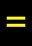

名前で検索（五十音） / Search Monsters by Name (Gojūon)
全モンスターを日本語名の読みで五十音順に並べた索引です。行（あ・か・さ…）をクリックで移動、またはブラウザの検索（Ctrl+F / ⌘F）で日本語名・英語名のどちらでも探せます。名前をクリックすると詳細ページへ移動します。読みは形態素解析で自動生成しているため、一部不正確な場合があります。
All monsters ordered by the reading of their Japanese name (gojūon / kana order). Jump by row (あ/か/さ…), or use browser find (Ctrl+F / ⌘F) to search by Japanese or English name. Readings are auto-generated by morphological analysis and may occasionally be imperfect.
記号から探す / Browse by symbol · モンスター索引 / Index
あ ・ か ・ さ ・ た ・ な ・ は ・ ま ・ や ・ ら ・ わ ・ 他
あ行（212）
| ID | 記号 / Sym | 名前 / Name | 階層 / Lv | 希少度 / Rar | 速度 / Spd | 体力 / HP | AC | 経験値 / Exp |
|---|---|---|---|---|---|---|---|---|
| 337 | アース・ハウンド Earth hound |
20 | 1 | 110 | 15d8 | 30 | 200 | |
| 357 | アーチ=ヴァイル Arch-vile |
21 | 1 | 125 | 11d11 | 30 | 300 | |
| 637 | アーチプリースト Archpriest |
40 | 2 | 120 | 52d10 | 60 | 1800 | |
| 776 | アーチリッチ Archlich |
64 | 2 | 120 | 35d100 | 120 | 20000 | |
| 794 | アーデンの森の主『ジュリアン』 Julian, Master of Arden Forest |
69 | 1 | 130 | 55d100 | 100 | 36000 | |
| 1246 | アイ・ホーン Eye phorn |
50 | 2 | 110 | 20d20 | 0 | 500 | |
| 1181 | アイアン・リッチ Iron lich |
52 | 3 | 120 | 28d100 | 100 | 19000 | |
| 1112 | アイス・コボルド Ice kobold |
12 | 1 | 110 | 12d10 | 35 | 42 | |
| 379 | アイス・スケルトン Ice skeleton |
23 | 1 | 110 | 19d9 | 34 | 70 | |
| 1194 | アイス・ワイアーム Great Ice Wyrm |
54 | 1 | 120 | 66d50 | 125 | 14000 | |
| 805 | アイの暴君『オマラックス』 Omarax the Eye Tyrant |
73 | 4 | 130 | 65d100 | 80 | 16000 | |
| 1086 | アイル・オブ・ディープ Isle of the Deep |
62 | 3 | 125 | 200d20 | 100 | 10000 | |
| 820 | アヴァロンの主『コーウィン』 Corwin, Lord of Avalon |
78 | 1 | 130 | 59d100 | 100 | 35500 | |
| 188 | アウルベア Owlbear |
10 | 1 | 110 | 15d8 | 20 | 35 | |
| 89 | 青イモムシの大群 Blue worm mass |
4 | 1 | 100 | 5d8 | 12 | 5 | |
| 1126 | 青鬼 Blue ogre |
36 | 1 | 110 | 20d18 | 65 | 800 | |
| 762 | 青き衣の『フンディン』 Fundin Bluecloak |
56 | 2 | 130 | 50d100 | 195 | 20000 | |
| 959 | 青ぷよ Blue puyo |
25 | 8 | 120 | 3d1 | 20 | 50 | |
| 252 | 青ベトベト Blue icky thing |
14 | 4 | 100 | 10d6 | 20 | 20 | |
| 850 | 赤顎狼『カルハロス』 Carcharoth, the Jaws of Thirst |
92 | 2 | 135 | 75d200 | 110 | 80000 | |
| 105 | 赤イモムシの大群 Red worm mass |
5 | 1 | 100 | 5d8 | 12 | 6 | |
| 1125 | 赤鬼 Red ogre |
36 | 1 | 110 | 20d18 | 65 | 800 | |
| 1274 | 赤チォコヴォ Red Chiokovo |
43 | 10 | 120 | 20d55 | 100 | 3000 | |
| 1354 | 赤チォコヴォLv99 Lv.99 Red Chiokovo |
99 | 6 | 135 | 80d100 | 150 | 80000 | |
| 693 | 暁の戦士 Warrior of the Dawn |
45 | 2 | 120 | 25d25 | 70 | 500 | |
| 958 | 赤ぷよ Red puyo |
25 | 8 | 120 | 3d1 | 20 | 50 | |
| 1238 | 悪意の具現『ヘルハウンド』 Hellhound, the Beast |
29 | 2 | 120 | 30d30 | 70 | 1200 | |
| 819 | 悪の魔術師『クリングゾール』 Klingsor, Evil Master of Magic |
78 | 3 | 130 | 70d100 | 100 | 40000 | |
| 1179 | 悪魔崇拝司祭 High demonologist |
41 | 2 | 120 | 28d10 | 50 | 700 | |
| 1008 | 悪魔崇拝者 Demonologist |
36 | 2 | 115 | 28d10 | 50 | 700 | |
| 463 | アクラシュ Aklash |
29 | 4 | 110 | 30d9 | 64 | 300 | |
| 885 | 浅い水たまり Shallow puddle |
11 | 6 | 115 | 9d6 | 17 | 70 | |
| 1114 | アシッド・コボルド Acid kobold |
12 | 1 | 110 | 12d10 | 35 | 42 | |
| 1309 | 足なんて飾り『サンダーズ大佐』 Colonel Thunders, the Legless Fryer |
36 | 3 | 120 | 50d30 | 80 | 3000 | |
| 1105 | 汗血馬 Ferghana horse |
20 | 2 | 115 | 20d15 | 70 | 240 | |
| 330 | アゾグの息子『ボルグ』 Bolg, Son of Azog |
20 | 4 | 115 | 50d10 | 50 | 800 | |
| 423 | アダマンタイトのクリーピングコイン Creeping adamantite coins |
50 | 6 | 130 | 60d25 | 100 | 1000 | |
| 1110 | 悪鬼の血脈『ティボルト』 Tibalt, the Fiend-Blooded |
22 | 4 | 115 | 40d10 | 70 | 1000 | |
| 1295 | あつくもえるてき Soul Consuming Flame |
59 | 6 | 130 | 60d30 | 6 | 12000 | |
| 16 | あてどなくふらつく商人 Aimless looking merchant |
0 | 1 | 110 | 3d3 | 1 | 0 | |
| 124 | 窖に潜むもの Crypt Creep |
7 | 2 | 110 | 6d8 | 12 | 25 | |
| 577 | 窖の怪物 Crypt thing |
37 | 3 | 120 | 160d5 | 60 | 2000 | |
| 957 | あばれ馬 Unruly horse |
9 | 2 | 110 | 12d10 | 30 | 35 | |
| 1352 | アビス・ボルテックス Abyss vortex |
55 | 2 | 140 | 32d20 | 80 | 4000 | |
| 1120 | アポトキシン・コボルド Apotoxin kobold |
24 | 1 | 115 | 21d11 | 45 | 333 | |
| 964 | あやしい影 Shadower |
1 | 255 | 110 | 1d1 | 0 | 0 | |
| 1350 | アラクノトロン Arachnotron |
45 | 3 | 115 | 40d30 | 100 | 10000 | |
| 760 | ありうべからざるもの『ニョグタ』 Nyogtha, the Thing that Should not Be |
56 | 2 | 130 | 55d99 | 120 | 20000 | |
| 424 | アルグロス Algroth |
27 | 1 | 110 | 21d12 | 60 | 150 | |
| 661 | アルコン Archon |
41 | 5 | 130 | 100d35 | 140 | 8000 | |
| 1319 | アルチャウ Alchau |
34 | 3 | 120 | 28d20 | 10 | 200 | |
| 1203 | アルドゥインの尖兵『ミルムルニル』 Mirmulnir, the vanguard of Alduin |
21 | 3 | 115 | 30d17 | 80 | 850 | |
| 383 | アルベリヒの息子『ハーゲン』 Hagen, Son of Alberich |
24 | 2 | 110 | 82d10 | 80 | 300 | |
| 12 | 哀れな身なりの乞食 Pitiful looking beggar |
0 | 1 | 110 | 1d4 | 1 | 0 | |
| 825 | 『アングマールの魔王』 The Witch-King of Angmar |
80 | 3 | 130 | 60d100 | 120 | 84000 | |
| 1005 | 暗黒城の魔術師『アンサロム』 Ansalom, the Dark Wizard |
55 | 10 | 120 | 22d150 | 100 | 20000 | |
| 134 | 暗黒トカゲ Night lizard |
7 | 2 | 110 | 4d8 | 16 | 35 | |
| 973 | 暗黒の島マーモの皇帝『ベルド』 Beld, Ruler of Marmo |
48 | 4 | 125 | 77d30 | 160 | 18500 | |
| 913 | アンデッド・チョウチンアンコウ Undead devilfish |
15 | 4 | 105 | 15d5 | 20 | 75 | |
| 781 | アンデッド・ビホルダー Undead beholder |
52 | 4 | 120 | 37d99 | 80 | 6000 | |
| 860 | アンバーの王『オベロン』 Oberon, King of Amber |
99 | 1 | 145 | 99d111 | 165 | 130000 | |
| 773 | アンバーの狂気の夢想家『ブランド』 Brand, Mad Visionary of Amber |
60 | 1 | 120 | 50d100 | 100 | 35000 | |
| 807 | アンバーの強者『ジェラード』 Gerard, Strongman of Amber |
74 | 1 | 130 | 66d101 | 150 | 36500 | |
| 283 | アンバーハルク Umber hulk |
16 | 1 | 110 | 20d10 | 50 | 75 | |
| 1407 | イーク・キャプテン Yeek captain |
10 | 1 | 110 | 5d8 | 22 | 50 | |
| 1403 | イーク・ハイメイジ High mage yeek |
9 | 1 | 110 | 2d5 | 6 | 22 | |
| 1399 | イーク・メイジ Mage yeek |
5 | 1 | 110 | 2d4 | 5 | 16 | |
| 1400 | イークのスリ Pickpocketor yeek |
9 | 1 | 115 | 3d4 | 10 | 16 | |
| 237 | イークの大王『ボルドール』 Boldor, King of the Yeeks |
13 | 3 | 120 | 18d10 | 24 | 200 | |
| 1059 | イークの大統領『ノボータ・ケシータ』 Noborta Kesyta, the Yeek President |
0 | 255 | 109 | 10d20 | 15 | 0 | |
| 1401 | イークのひったくり Snatcher yeek |
9 | 1 | 115 | 3d4 | 10 | 16 | |
| 1398 | イークの兵卒 Private yeek |
9 | 1 | 110 | 4d7 | 20 | 20 | |
| 92 | イウォーク Ewok |
5 | 2 | 110 | 3d5 | 10 | 20 | |
| 154 | イエティ Yeti |
9 | 3 | 110 | 11d9 | 24 | 30 | |
| 66 | イエロー・ゼリー Yellow jelly |
3 | 1 | 120 | 10d8 | 1 | 13 | |
| 76 | イエロー・モルド Yellow mold |
3 | 1 | 110 | 8d8 | 10 | 11 | |
| 1284 | 『イェンダーの魔法使い』 Wizard of Yendor |
80 | 16 | 130 | 70d100 | 100 | 60000 | |
| 1285 | 『イェンダーの魔法使い』 Wizard of Yendor |
80 | 255 | 125 | 30d100 | 100 | 10000 | |
| 945 | 怒りの魔王『炎のバイケタル』 Biketal of Fire |
73 | 2 | 125 | 70d100 | 160 | 32000 | |
| 908 | 生きたポール・アックス Pole axe of animated attack |
21 | 2 | 120 | 10d14 | 40 | 60 | |
| 220 | イクシツザチトル Ixitxachitl |
12 | 1 | 110 | 12d8 | 30 | 40 | |
| 328 | イクシツザチトル・プリースト Ixitxachitl priest |
19 | 1 | 110 | 10d10 | 40 | 80 | |
| 803 | 生ける虚無『ヌル』 Null the Living Void |
72 | 2 | 125 | 65d100 | 100 | 32500 | |
| 823 | 生ける炎『クトゥグァ』 Cthugha, the Living Flame |
78 | 3 | 133 | 50d100 | 100 | 17500 | |
| 505 | 『石川五右衛門』 Ishikawa Goemon |
36 | 7 | 120 | 13d113 | 70 | 2000 | |
| 678 | 異次元の色彩 Colour out of space |
43 | 2 | 120 | 12d100 | 100 | 8000 | |
| 323 | 石ゴーレム Stone golem |
19 | 2 | 100 | 28d8 | 75 | 100 | |
| 1048 | 石ドラゴン Stone dragon |
45 | 3 | 110 | 100d25 | 170 | 4000 | |
| 1368 | 石の宝箱 Stone loot box mimic |
55 | 1 | 115 | 200d25 | 160 | 1000 | |
| 1004 | 異世界からの勇者『ピップ』 Pip, the Adventurer from Another World |
35 | 3 | 110 | 20d48 | 80 | 1800 | |
| 857 | 『偉大なるクトゥルフ』 Great Cthulhu |
96 | 2 | 135 | 130d100 | 140 | 125000 | |
| 1320 | 偉大なる祖国の『ライカ』 Laika, the greatest beast of USSR |
0 | 3 | 115 | 4d5 | 5 | 20 | |
| 736 | 偉大なる不浄 Great unclean one |
63 | 3 | 120 | 165d40 | 150 | 24000 | |
| 835 | いたずら者『ロキ』 Loki the Trickster |
85 | 2 | 130 | 85d110 | 160 | 100000 | |
| 1294 | 『いなずま・あらし』 Thunder and Storm |
56 | 3 | 125 | 40d100 | 120 | 15000 | |
| 569 | 古のもの Elder thing |
36 | 3 | 110 | 35d13 | 70 | 800 | |
| 1312 | イヌワシ Golden eagle |
35 | 2 | 120 | 7d100 | 65 | 350 | |
| 571 | イプシシマス Ipsissimus |
36 | 2 | 110 | 28d13 | 50 | 666 | |
| 893 | イフリート Efreeti |
40 | 3 | 120 | 70d10 | 70 | 900 | |
| 663 | 忌まわしき狩人 Hunting horror |
42 | 2 | 110 | 30d17 | 90 | 2300 | |
| 23 | イモリ Newt |
1 | 1 | 110 | 2d6 | 12 | 4 | |
| 33 | 岩トカゲ Rock lizard |
1 | 1 | 110 | 3d4 | 4 | 4 | |
| 401 | 岩トロル Stone troll |
25 | 1 | 110 | 23d10 | 40 | 85 | |
| 495 | 岩トロル『トム』 Tom the Stone Troll |
33 | 3 | 115 | 11d100 | 70 | 2000 | |
| 493 | 岩トロル『バート』 Bert the Stone Troll |
33 | 3 | 115 | 11d100 | 70 | 2000 | |
| 494 | 岩トロル『ビル』 Bill the Stone Troll |
33 | 3 | 115 | 11d100 | 70 | 2000 | |
| 161 | 岩もぐら Rock mole |
9 | 2 | 110 | 11d11 | 30 | 25 | |
| 529 | 陰気なレプラコーン Malicious leprechaun |
35 | 4 | 120 | 4d5 | 13 | 85 | |
| 921 | インターネット・エクスプローダー Internet Exploder |
30 | 1 | 80 | 20d20 | 0 | 200 | |
| 543 | インパクト・ハウンド Impact hound |
35 | 2 | 110 | 35d10 | 30 | 500 | |
| 296 | インプ Imp |
17 | 2 | 110 | 6d8 | 30 | 55 | |
| 799 | 陰謀家『ケイン』 Caine, the Conspirator |
71 | 1 | 130 | 56d100 | 100 | 36500 | |
| 992 | ヴァリノールの猟犬『フアン』 Huan, the Hound of Valinor |
72 | 5 | 130 | 75d100 | 110 | 30000 | |
| 1290 | 『ヴィネガー・ドッピオ』 Vinegar Doppio |
65 | 5 | 130 | 10d100 | 100 | 5555 | |
| 582 | ウィル・オー・ウィスプ Will o' the wisp |
37 | 4 | 130 | 20d10 | 150 | 500 | |
| 683 | 『ウートガルザ・ロキ』 Utgard-Loke |
44 | 3 | 120 | 40d100 | 125 | 13500 | |
| 767 | ヴェールを与えるもの『ダオロス』 Daoloth, the Render of the Veils |
58 | 3 | 120 | 72d100 | 125 | 27500 | |
| 1196 | ヴェノム・ワイアーム Venom Wyrm |
54 | 1 | 120 | 66d50 | 125 | 14000 | |
| 1140 | ウェンディゴ Wendigo |
30 | 3 | 120 | 30d19 | 55 | 500 | |
| 888 | ヴォア Vore |
44 | 2 | 125 | 35d10 | 30 | 850 | |
| 1351 | ヴォイド・ボルテックス Void vortex |
55 | 2 | 140 | 32d20 | 80 | 4000 | |
| 1009 | ウォウズの犬王『ドワール』 Dwar, Dog Lord of Waw |
44 | 3 | 120 | 20d100 | 90 | 13000 | |
| 340 | ウォーター・ハウンド Water hound |
20 | 2 | 110 | 15d8 | 30 | 200 | |
| 355 | ウォーター・ボルテックス Water vortex |
21 | 1 | 110 | 9d9 | 30 | 100 | |
| 205 | ヴォーパル・バニー Vorpal bunny |
11 | 3 | 120 | 10d10 | 40 | 40 | |
| 1213 | ヴォルキハル城の主『ハルコン』 Harkon, the patriarch of Volkihar castle |
61 | 2 | 120 | 70d80 | 120 | 29000 | |
| 336 | 動く岩 Livingstone |
20 | 4 | 110 | 6d8 | 28 | 30 | |
| 1357 | ウサウサストライカー Bunbun Striker |
63 | 255 | 112 | 25d40 | 90 | 5000 | |
| 15 | 歌を口ずさむ幸せな酔っぱらい Singing, happy drunk |
0 | 1 | 110 | 2d3 | 1 | 0 | |
| 231 | 唸るスピリット Moaning spirit |
12 | 2 | 120 | 5d8 | 20 | 44 | |
| 626 | ウボ=サスラの落とし子 Spawn of Ubbo-Sathla |
40 | 5 | 115 | 30d10 | 40 | 150 | |
| 956 | 馬 Horse |
5 | 1 | 110 | 11d8 | 30 | 25 | |
| 544 | 海トロル Sea troll |
35 | 1 | 110 | 41d10 | 50 | 440 | |
| 1390 | 海坊主 Umibozu |
35 | 4 | 120 | 100d10 | 100 | 2000 | |
| 249 | ヴラスタ Vlasta |
14 | 3 | 120 | 12d6 | 20 | 40 | |
| 313 | ウルク Uruk |
18 | 1 | 110 | 8d10 | 50 | 68 | |
| 350 | ウルク『ウグルク』 Ugluk, the Uruk |
20 | 4 | 110 | 64d10 | 90 | 550 | |
| 356 | ウルク『ルグドゥシュ』 Lugdush, the Uruk |
21 | 3 | 110 | 72d10 | 95 | 550 | |
| 373 | ウルク=ハイの大王『アゾグ』 Azog, King of the Uruk-Hai |
23 | 5 | 125 | 117d10 | 80 | 1111 | |
| 291 | ウルファングの息子『ウルファスト』 Ulfast, Son of Ulfang |
16 | 3 | 110 | 34d10 | 40 | 200 | |
| 413 | ウルファングの息子『ウルワルス』 Ulwarth, Son of Ulfang |
26 | 4 | 110 | 85d10 | 40 | 500 | |
| 1171 | 虚界の魔獣『ジェノサイバー』 Genocyber, the Vajura Beast |
72 | 3 | 132 | 70d100 | 160 | 27500 | |
| 380 | ウンバールの『アンガマイテ』 Angamaite of Umbar |
24 | 2 | 110 | 80d10 | 80 | 400 | |
| 392 | ウンバールの『サンガハイアンド』 Sangahyando of Umbar |
24 | 2 | 110 | 80d10 | 80 | 400 | |
| 647 | 運命の魔女 Wyrd sister |
40 | 4 | 125 | 50d11 | 60 | 1900 | |
| 338 | エア・ハウンド Air hound |
20 | 1 | 110 | 15d8 | 30 | 200 | |
| 811 | エーテル・ハウンド Aether hound |
75 | 2 | 120 | 60d30 | 100 | 8000 | |
| 752 | エーテル・ボルテックス Aether vortex |
55 | 2 | 130 | 32d20 | 40 | 4500 | |
| 530 | エオグ・ゴーレム Eog golem |
35 | 4 | 100 | 100d20 | 125 | 1200 | |
| 1248 | エキドナの長子『オルトロス』 Orthus, Firstborn of Echidna |
85 | 1 | 130 | 100d101 | 165 | 82000 | |
| 1245 | エッヂ Chronium edge |
50 | 2 | 140 | 20d20 | 0 | 1500 | |
| 621 | エティン Ettin |
39 | 3 | 110 | 10d100 | 80 | 800 | |
| 309 | エナジー・ハウンド Energy hound |
18 | 1 | 110 | 10d6 | 30 | 70 | |
| 359 | エナジー・ボルテックス Energy vortex |
21 | 1 | 110 | 12d12 | 30 | 130 | |
| 1372 | エメラルド・ゴーレム Emerald golem |
24 | 4 | 110 | 80d10 | 80 | 400 | |
| 1058 | エルダー・バンパイア Elder vampire |
54 | 3 | 120 | 34d100 | 90 | 7500 | |
| 620 | エルドラク Eldrak |
39 | 3 | 110 | 75d10 | 80 | 800 | |
| 900 | エルフ・ロード Elf lord |
25 | 2 | 121 | 15d15 | 50 | 555 | |
| 636 | エンチャントレス Enchantress |
40 | 4 | 130 | 52d10 | 60 | 2100 | |
| 708 | エント Ent |
46 | 3 | 120 | 40d100 | 120 | 12500 | |
| 821 | 『エンペラー・クイルスルグ』 The Emperor Quylthulg |
78 | 3 | 130 | 50d100 | 1 | 20000 | |
| 804 | エンペラー・リッチ『ベクナ』 Vecna, the Emperor Lich |
72 | 2 | 135 | 65d100 | 85 | 30000 | |
| 1183 | エンペラー・ワイト Emperor wight |
43 | 2 | 120 | 38d13 | 40 | 2400 | |
| 150 | 追い剥ぎ Bandit |
8 | 2 | 110 | 8d8 | 24 | 26 | |
| 813 | 王位簒奪者『エリック』 Eric the Usurper |
76 | 1 | 130 | 58d100 | 100 | 35500 | |
| 978 | 黄金王『アル=ファラゾン』 Ar-Pharazon the Golden |
38 | 6 | 120 | 180d10 | 90 | 2500 | |
| 697 | 黄金竜『スマウグ』 Smaug the Golden |
45 | 2 | 120 | 20d100 | 100 | 19000 | |
| 522 | 王のミイラ Greater mummy |
34 | 3 | 110 | 54d13 | 68 | 800 | |
| 879 | 王蟲 Ohmu |
60 | 20 | 110 | 100d10 | 90 | 2300 | |
| 849 | 大いなる深淵の主『ノーデンス』 Nodens, Lord of the Great Abyss |
92 | 3 | 130 | 75d99 | 100 | 96000 | |
| 979 | 大江山の鬼の王『酒呑童子』 Shuten-douji, the King Ogre of Ooe-Mountain |
47 | 3 | 125 | 30d100 | 120 | 15000 | |
| 238 | オーガ Ogre |
13 | 2 | 110 | 13d9 | 33 | 50 | |
| 479 | オーガ・シャーマン Ogre shaman |
32 | 2 | 110 | 14d10 | 55 | 250 | |
| 430 | オーガ・メイジ Ogre mage |
27 | 2 | 110 | 30d12 | 40 | 300 | |
| 245 | オーカー・ゼリー Ochre jelly |
13 | 3 | 120 | 13d8 | 18 | 40 | |
| 907 | オーガ戦士 Ogre warrior |
21 | 2 | 110 | 10d15 | 34 | 100 | |
| 196 | 狼 Wolf |
10 | 1 | 120 | 6d6 | 30 | 30 | |
| 170 | 狼『血塗られし牙』 Bloodfang the Wolf |
9 | 1 | 120 | 6d6 | 30 | 30 | |
| 846 | 狼『フェンリル』 Fenris Wolf |
90 | 2 | 134 | 120d100 | 90 | 70000 | |
| 344 | 狼<ウィア>人 Weir |
20 | 2 | 110 | 10d12 | 30 | 150 | |
| 995 | 狼の族長 Wolf Chieftain |
22 | 6 | 120 | 8d15 | 50 | 120 | |
| 1153 | 大きな泡 Large aqua illusion |
21 | 2 | 110 | 18d18 | 30 | 200 | |
| 285 | オーク・キャプテン Orc captain |
16 | 3 | 110 | 20d10 | 59 | 40 | |
| 162 | オーク・シャーマン Orc shaman |
9 | 1 | 110 | 9d8 | 15 | 30 | |
| 954 | オークの弩弓隊 Orcish Artillery |
14 | 3 | 110 | 10d10 | 20 | 40 | |
| 315 | オークの隊長『ゴルバグ』 Gorbag, the Orc Captain |
18 | 3 | 110 | 40d10 | 60 | 400 | |
| 314 | オークの隊長『シャグラト』 Shagrat, the Orc Captain |
18 | 2 | 110 | 40d10 | 60 | 400 | |
| 1072 | オークの隊長『マウフル』 Mauhur, the Orc Captain |
12 | 3 | 110 | 24d10 | 60 | 160 | |
| 386 | 大白鮫 Great white shark |
24 | 2 | 120 | 100d6 | 70 | 250 | |
| 21 | 大白ヘビ Large white snake |
1 | 1 | 100 | 3d6 | 30 | 4 | |
| 991 | オーディンの乗馬『スレイプニル』 Sleipnir, Odin's Steed |
51 | 3 | 130 | 40d100 | 140 | 17000 | |
| 368 | オート・ローラー Auto-roller |
22 | 2 | 120 | 70d12 | 80 | 230 | |
| 1092 | オーラントの公使 Fat official of Allant |
34 | 4 | 108 | 80d12 | 110 | 2000 | |
| 335 | 大鷲 Great eagle |
35 | 2 | 135 | 5d100 | 65 | 450 | |
| 468 | 大鷲王『ソロンドール』 Thorondor |
55 | 1 | 145 | 39d100 | 65 | 22222 | |
| 149 | 丘オーク Hill orc |
8 | 1 | 110 | 13d9 | 32 | 25 | |
| 186 | 丘オーク『グリシュナッハ』 Grishnakh, the Hill Orc |
10 | 3 | 110 | 23d10 | 20 | 160 | |
| 215 | 丘オークの隊長『ゴルフィンブール』 Golfimbul, the Hill Orc Chief |
12 | 3 | 110 | 24d10 | 60 | 230 | |
| 681 | 丘からの恐怖『チャウグナール・ファウグン』 Chaugnar Faugn, Horror from the Hills |
44 | 4 | 110 | 30d100 | 125 | 6250 | |
| 255 | 丘ジャイアント Hill giant |
14 | 1 | 110 | 16d10 | 45 | 60 | |
| 605 | 熾天使 Seraph |
38 | 4 | 120 | 50d10 | 68 | 1800 | |
| 1057 | オグリロン Ogrillon |
16 | 2 | 110 | 22d9 | 33 | 75 | |
| 1104 | おじゃまぷよ Hindrance puyo |
30 | 10 | 108 | 30d6 | 60 | 50 | |
| 1359 | おたずねものムシ Criminal Caterpillar |
23 | 15 | 120 | 25d10 | 50 | 10000 | |
| 1254 | 踊る道化師『ペニーワイズ』 Pennywise, the dancing clown |
32 | 3 | 120 | 100d12 | 70 | 1500 | |
| 232 | おどろしきバンダースナッチ Frumious bandersnatch |
12 | 2 | 120 | 13d8 | 30 | 40 | |
| 1164 | 鬼殺隊の『先輩』 Senior, the nameless member of Demon Slayer Corps |
14 | 1 | 110 | 25d10 | 35 | 300 | |
| 1165 | 鬼殺隊の隊士 Member of Demon Slayer Corps |
11 | 2 | 110 | 5d25 | 30 | 200 | |
| 1371 | オブシディアン・ゴーレム Obsidian golem |
14 | 4 | 110 | 14d8 | 50 | 70 | |
| 545 | 汚物エレメンタル Ooze elemental |
35 | 3 | 110 | 13d10 | 80 | 300 | |
| 953 | 折れたデスソード Broken death sword |
4 | 5 | 120 | 6d3 | 20 | 15 | |
| 538 | オログ Olog |
35 | 1 | 110 | 42d10 | 50 | 450 |
か行（306）
| ID | 記号 / Sym | 名前 / Name | 階層 / Lv | 希少度 / Rar | 速度 / Spd | 体力 / HP | AC | 経験値 / Exp |
|---|---|---|---|---|---|---|---|---|
| 866 | カァウ Caaws |
90 | 8 | 120 | 15d231 | 176 | 70000 | |
| 528 | ガーゴイル Gargoyle |
34 | 2 | 110 | 18d12 | 50 | 110 | |
| 327 | ガースト Ghast |
19 | 1 | 110 | 12d10 | 40 | 75 | |
| 269 | ガーディアン・ナーガ Guardian naga |
15 | 2 | 110 | 24d11 | 65 | 80 | |
| 302 | 怪奇苔男 Swamp thing |
17 | 2 | 110 | 10d20 | 60 | 80 | |
| 1406 | 骸骨イーク Skeleton yeek |
7 | 1 | 110 | 3d6 | 8 | 18 | |
| 466 | 骸骨ティラノサウルス Skeletal tyrannosaurus |
30 | 2 | 120 | 50d10 | 55 | 225 | |
| 941 | 骸骨ドラゴン Bone dragon |
37 | 3 | 110 | 120d10 | 55 | 1700 | |
| 830 | 骸骨の帝王『カントラス』 Cantoras, the Skeletal Lord |
84 | 2 | 140 | 75d100 | 120 | 90000 | |
| 1169 | 怪物の太母『エキドナ』 Echidna, Great mother of monsters |
75 | 3 | 130 | 60d100 | 125 | 23500 | |
| 203 | カオス・シェイプチェンジャー Chaos shapechanger |
11 | 2 | 110 | 20d9 | 14 | 38 | |
| 458 | カオス・タイル Chaos tile |
29 | 6 | 120 | 3d5 | 60 | 120 | |
| 501 | カオス・ドレイク Chaos drake |
33 | 3 | 110 | 50d10 | 80 | 850 | |
| 779 | カオス・ハウンド Chaos hound |
65 | 1 | 120 | 60d30 | 100 | 6000 | |
| 751 | カオス・ボルテックス Chaos vortex |
55 | 2 | 140 | 32d20 | 80 | 4000 | |
| 783 | カオス・ワイアーム Great Wyrm of Chaos |
67 | 2 | 120 | 45d100 | 170 | 25000 | |
| 967 | ガキ大将『ジャイアン』 Jaian, the Boss of the Kids |
29 | 3 | 110 | 100d10 | 100 | 500 | |
| 476 | ガグ Gug |
31 | 2 | 110 | 22d15 | 60 | 210 | |
| 1002 | 『格さん』 Kaku-san, the Mitsukuni's Warder |
30 | 255 | 115 | 40d15 | 80 | 500 | |
| 1103 | 拡散の尖兵 Vanguard of diffusion |
45 | 4 | 110 | 32d100 | 90 | 5000 | |
| 1402 | 格闘家イーク Fighter yeek |
10 | 1 | 110 | 4d8 | 15 | 22 | |
| 670 | 『影のジャック』 Jack of Shadows |
42 | 4 | 150 | 30d100 | 150 | 10000 | |
| 898 | 花崗岩の壁 Granite wall |
30 | 2 | 100 | 15d15 | 120 | 350 | |
| 1348 | カコデーモン Cacodemon |
30 | 1 | 110 | 27d19 | 70 | 250 | |
| 410 | 風早彦『グワイヒア』 Gwaihir the Windlord |
40 | 1 | 142 | 15d100 | 65 | 8000 | |
| 519 | ガス・スポア Gas spore |
34 | 4 | 110 | 25d10 | 1 | 100 | |
| 828 | 風に乗りて歩むもの『イタカ』 Ithaqua the Windwalker |
82 | 2 | 140 | 55d100 | 125 | 65000 | |
| 526 | 風のエレメンタル Air elemental |
34 | 2 | 120 | 30d5 | 50 | 390 | |
| 687 | 風の女王『アリエル』 Ariel, Queen of Air |
44 | 4 | 130 | 27d100 | 50 | 8000 | |
| 227 | 風のスピリット Air spirit |
12 | 2 | 130 | 8d8 | 40 | 40 | |
| 827 | 風の帝王『パズズ』 Pazuzu, Lord of Air |
82 | 2 | 140 | 55d100 | 125 | 60000 | |
| 1391 | 幽体グレーター・クラーケン Spectral Greater kraken |
79 | 4 | 125 | 60d100 | 200 | 35000 | |
| 385 | 幽体獣 Phantom beast |
24 | 1 | 110 | 12d12 | 40 | 100 | |
| 152 | 幽体戦士 Phantom warrior |
8 | 1 | 110 | 5d5 | 10 | 15 | |
| 705 | 幽体ティラノサウルス Spectral tyrannosaurus |
46 | 3 | 120 | 60d50 | 120 | 15000 | |
| 1200 | 幽体ワイアーム Spectral Wyrm |
77 | 4 | 130 | 60d100 | 200 | 35000 | |
| 707 | 『ガタノソア』 Ghatanothoa |
46 | 2 | 120 | 100d30 | 100 | 16000 | |
| 441 | 『ガチャピン』 Gachapin |
29 | 2 | 120 | 110d9 | 90 | 1500 | |
| 160 | カツオノエボシ Portuguese man-o-war |
9 | 2 | 110 | 10d10 | 30 | 25 | |
| 1388 | 河童 Kappa |
5 | 2 | 120 | 5d10 | 10 | 30 | |
| 889 | 活発な機雷 Bouncing mine |
70 | 6 | 120 | 40d15 | 10 | 2000 | |
| 447 | カトブレパス Catoblepas |
29 | 2 | 110 | 30d10 | 55 | 400 | |
| 1250 | 可燃性ガス Flammable gas |
30 | 4 | 90 | 3d3 | 37 | 15 | |
| 179 | カミカゼ・イーク Kamikaze yeek |
12 | 1 | 113 | 5d8 | 18 | 15 | |
| 952 | カミカゼ・ハウンド Kamikaze hound |
44 | 4 | 130 | 30d10 | 50 | 500 | |
| 1076 | 禿竜洞主『朶思大王』 King Duosi, the Chief of the Southerners |
11 | 2 | 110 | 25d10 | 45 | 150 | |
| 1040 | カメレオン Chameleon |
20 | 1 | 110 | 10d100 | 0 | 0 | |
| 1041 | カメレオンの王 Chameleon Lord |
45 | 1 | 110 | 33d100 | 0 | 0 | |
| 119 | ガラガラヘビ Rattlesnake |
6 | 1 | 110 | 6d7 | 24 | 20 | |
| 61 | カラス Crow |
2 | 2 | 120 | 3d5 | 12 | 10 | |
| 1078 | 烏戈国王『兀突骨』 Wutugu, the Chief of the Southerners |
17 | 2 | 110 | 35d10 | 60 | 250 | |
| 669 | 『カリブディス』 Charybdis |
49 | 1 | 120 | 40d100 | 100 | 13000 | |
| 867 | カルヴァリン Culverin |
8 | 2 | 110 | 8d5 | 13 | 25 | |
| 1347 | 『カルバノグの殺人兎』 The Killer Rabbit of Caerbannog |
40 | 4 | 135 | 20d100 | 220 | 10000 | |
| 1119 | カルボラン・コボルド Carborane kobold |
23 | 1 | 110 | 20d10 | 40 | 240 | |
| 78 | 黄イモムシの大群 Yellow worm mass |
3 | 2 | 100 | 4d8 | 4 | 5 | |
| 81 | 黄色い光 Yellow light |
4 | 1 | 120 | 2d6 | 12 | 5 | |
| 486 | 記憶苔 Memory moss |
32 | 3 | 110 | 1d2 | 1 | 150 | |
| 47 | 黄おばけキノコ Yellow mushroom patch |
2 | 1 | 110 | 1d1 | 1 | 3 | |
| 852 | 奇怪な原子核の混沌『アザトート』 Azathoth, Seething Nuclear Chaos |
93 | 3 | 130 | 99d99 | 150 | 100000 | |
| 6 | きこり Woodsman |
0 | 1 | 110 | 3d3 | 1 | 0 | |
| 735 | 『黄衣の王』 The King in Yellow |
53 | 3 | 120 | 32d100 | 100 | 30000 | |
| 1174 | 黄衣の高位修行僧 High topaz monk |
40 | 2 | 120 | 55d15 | 46 | 800 | |
| 1047 | 黄衣の修行僧 Topaz monk |
35 | 2 | 115 | 59d11 | 46 | 800 | |
| 1 | 汚いイタズラ小僧 Filthy street urchin |
0 | 2 | 110 | 1d4 | 1 | 0 | |
| 1308 | 気狂いピエロ『ドネルド・マクドネルド』 Roneld McDoneld, the Mad Pierrot |
36 | 3 | 120 | 50d30 | 80 | 3000 | |
| 1100 | 甲鱗のワーム Scaled wurm |
88 | 2 | 110 | 66d101 | 66 | 30000 | |
| 713 | 木の鬚『ファンゴルン』 Fangorn |
47 | 3 | 120 | 50d100 | 120 | 13500 | |
| 960 | 黄ぷよ Yellow puyo |
25 | 8 | 120 | 3d1 | 20 | 50 | |
| 971 | 金鱗の竜王『マイセン』 Mycen the Gold Dragon |
60 | 7 | 125 | 50d101 | 150 | 22500 | |
| 341 | キメラ Chimera |
20 | 1 | 110 | 13d8 | 15 | 100 | |
| 361 | キャリオン Carrion |
15 | 1 | 115 | 30d10 | 50 | 50 | |
| 395 | キャリオン・クローラー Carrion crawler |
25 | 2 | 110 | 20d12 | 40 | 60 | |
| 515 | キャリオン・クローラー Carrion crawler |
34 | 2 | 110 | 20d12 | 40 | 100 | |
| 451 | 『究極ダンジョン=クリーナー』 The Ultimate Dungeon Cleaner |
28 | 2 | 120 | 70d12 | 80 | 555 | |
| 1185 | 究極ビホルダー Ultimate beholder |
73 | 4 | 120 | 40d100 | 80 | 18000 | |
| 406 | 吸血イクシツザチトル Vampiric ixitxachitl |
26 | 1 | 110 | 22d22 | 50 | 120 | |
| 755 | 吸血鬼の使者『スリングウェシル』 Thuringwethil, the Vampire Messenger |
55 | 4 | 130 | 40d100 | 145 | 23000 | |
| 365 | 吸血霧 Vampiric mist |
22 | 1 | 110 | 10d8 | 55 | 40 | |
| 635 | 九首ヒドラ 9-headed hydra |
40 | 2 | 120 | 100d12 | 95 | 3000 | |
| 1271 | 吸魂鬼 Dementor |
60 | 4 | 120 | 10d100 | 100 | 5000 | |
| 1267 | キューちゃん Raven |
33 | 3 | 120 | 24d23 | 60 | 350 | |
| 987 | 九尾の狐 Nine-tailed fox |
49 | 7 | 120 | 30d60 | 140 | 10000 | |
| 1135 | 狂気を紡ぎしもの『アブドゥル・アルハザード』 Abdul Alhazred, the Mad Arab |
60 | 2 | 120 | 50d100 | 100 | 35000 | |
| 1028 | 凶熊 Mad bear |
15 | 1 | 110 | 18d10 | 35 | 70 | |
| 1323 | 狂戦士『バストラル』 Bastral, the berserker |
37 | 4 | 121 | 19d100 | 90 | 2500 | |
| 1061 | 『恐竜バーニーちゃん』 Barney the Dinosaur |
29 | 255 | 120 | 110d9 | 90 | 1500 | |
| 840 | 巨狼の帝王『ドラウグルイン』 Draugluin, Sire of All Werewolves |
87 | 2 | 130 | 90d100 | 90 | 60000 | |
| 1395 | 虚弱なイーク Frail yeek |
1 | 1 | 110 | 1d6 | 10 | 3 | |
| 1332 | 巨獣『ヅガッダグドマネング』 The Zguddagdmanaing Gigantic-Beast |
67 | 3 | 100 | 111d111 | 111 | 25000 | |
| 506 | 『巨人ファゾルト』 Fasolt the Giant |
33 | 7 | 110 | 11d111 | 70 | 2000 | |
| 558 | 巨像 Colossus |
36 | 4 | 105 | 30d100 | 150 | 900 | |
| 469 | 巨大青アリ Giant blue ant |
30 | 2 | 110 | 8d8 | 50 | 80 | |
| 168 | 巨大赤アリ Giant red ant |
9 | 2 | 110 | 4d8 | 34 | 22 | |
| 304 | 巨大赤サソリ Giant red scorpion |
17 | 1 | 110 | 11d8 | 44 | 62 | |
| 411 | 巨大赤ダニ Giant red tick |
26 | 1 | 110 | 16d8 | 54 | 90 | |
| 56 | 巨大アマガエル Giant green frog |
2 | 1 | 110 | 2d8 | 8 | 8 | |
| 482 | 巨大イカ Giant squid |
32 | 3 | 110 | 80d10 | 80 | 600 | |
| 369 | 巨大黄サソリ Giant yellow scorpion |
22 | 1 | 110 | 12d8 | 38 | 60 | |
| 653 | 巨大首なし Giant headless |
41 | 2 | 110 | 30d25 | 50 | 900 | |
| 49 | 巨大黒アリ Giant black ant |
2 | 1 | 110 | 3d6 | 20 | 10 | |
| 322 | 巨大黒トンボ Giant black dragon fly |
18 | 2 | 120 | 3d8 | 20 | 68 | |
| 473 | 巨大軍隊アリ Giant army ant |
30 | 3 | 120 | 19d6 | 40 | 90 | |
| 325 | 巨大ゴールド・トンボ Giant gold dragon fly |
18 | 2 | 120 | 3d8 | 20 | 78 | |
| 1007 | 巨大ゴキブリ Giant cockroach |
14 | 2 | 120 | 2d2 | 25 | 4 | |
| 929 | 巨大サイバーワイアーム天使悪魔リッチ Greater Cyber Wyrm Angel Daemon Lich |
99 | 50 | 150 | 99d99 | 200 | 30000 | |
| 75 | 巨大シロアリ Giant white ant |
3 | 1 | 110 | 3d6 | 16 | 9 | |
| 69 | 巨大白シラミ Giant white louse |
3 | 1 | 120 | 1d1 | 5 | 1 | |
| 1063 | 巨大白シラミの王『lousy』 Lousy, the King of Lice |
9 | 3 | 130 | 11d11 | 10 | 100 | |
| 176 | 巨大白ダニ Giant white tick |
10 | 2 | 100 | 12d8 | 40 | 27 | |
| 250 | 巨大白トンボ Giant white dragon fly |
14 | 3 | 110 | 5d8 | 20 | 60 | |
| 86 | 巨大白ネズミ Giant white rat |
4 | 1 | 110 | 2d2 | 7 | 2 | |
| 24 | 巨大白ムカデ Giant white centipede |
1 | 1 | 110 | 3d5 | 10 | 4 | |
| 1345 | 巨大戦艦『グレート・シング』 GREAT THING, the Huge Battle Ship |
70 | 3 | 130 | 110d100 | 120 | 42000 | |
| 266 | 巨大タコ Giant octopus |
15 | 2 | 105 | 30d11 | 60 | 60 | |
| 275 | 巨大タランチュラ Giant tarantula |
15 | 3 | 120 | 10d15 | 32 | 70 | |
| 114 | 巨大茶コウモリ Giant brown bat |
6 | 1 | 130 | 3d8 | 15 | 10 | |
| 276 | 巨大透明ムカデ Giant clear centipede |
15 | 2 | 110 | 5d8 | 30 | 30 | |
| 156 | 巨大ドブネズミ Giant grey rat |
9 | 1 | 110 | 2d3 | 12 | 2 | |
| 120 | 巨大ナメクジ Giant slug |
6 | 1 | 100 | 12d9 | 25 | 25 | |
| 259 | 巨大ノミ Giant flea |
14 | 1 | 120 | 1d2 | 7 | 3 | |
| 408 | 巨大灰色アリ Giant grey ant |
26 | 1 | 110 | 19d8 | 40 | 90 | |
| 524 | 巨大灰色サソリ Giant grey scorpion |
34 | 4 | 120 | 18d20 | 50 | 275 | |
| 1243 | 巨大バシリスク Greater basilisk |
50 | 2 | 120 | 75d30 | 100 | 11000 | |
| 27 | 巨大ハツカネズミ Giant white mouse |
1 | 1 | 110 | 1d3 | 4 | 3 | |
| 548 | 巨大火アリ Giant fire ant |
35 | 1 | 110 | 20d10 | 49 | 350 | |
| 95 | 巨大ヒル Giant leech |
5 | 1 | 120 | 6d8 | 20 | 20 | |
| 121 | 巨大ピンク・ガエル Giant pink frog |
7 | 1 | 110 | 5d8 | 16 | 16 | |
| 197 | 巨大フルーツ・バエ Giant fruit fly |
10 | 6 | 120 | 2d2 | 14 | 4 | |
| 320 | 巨大ブロンズ・トンボ Giant bronze dragon fly |
18 | 1 | 120 | 3d8 | 20 | 70 | |
| 287 | 巨大緑トンボ Giant green dragon fly |
16 | 2 | 110 | 3d8 | 20 | 70 | |
| 446 | 巨大紫イモムシ Giant purple worm |
29 | 4 | 110 | 65d8 | 65 | 400 | |
| 1324 | 巨龍『ベルフレイム』 Belflame, the queen dragon |
41 | 2 | 116 | 18d100 | 100 | 7000 | |
| 405 | キラー・クリムゾンビートル Killer crimson beetle |
25 | 2 | 110 | 20d8 | 50 | 85 | |
| 474 | キラー・スライス・ビートル Killer slicer beetle |
30 | 2 | 110 | 22d10 | 60 | 200 | |
| 260 | キリス・ウンゴルの『ウフサク』 Ufthak of Cirith Ungol |
14 | 3 | 110 | 32d10 | 50 | 200 | |
| 397 | キリス・ウンゴルの番人 Silent watcher |
25 | 5 | 110 | 80d20 | 80 | 590 | |
| 552 | 霧の巨人 Mist giant |
36 | 2 | 120 | 35d20 | 50 | 450 | |
| 989 | 麒麟 Kirin |
76 | 5 | 130 | 50d80 | 230 | 30000 | |
| 67 | 銀青ムカデ Metallic blue centipede |
3 | 1 | 120 | 4d5 | 6 | 8 | |
| 77 | 銀赤ムカデ Metallic red centipede |
3 | 1 | 120 | 4d8 | 9 | 14 | |
| 1031 | 金色の怪人『ワッハマン』 Wahha-Man the Golden |
85 | 2 | 130 | 100d100 | 200 | 105000 | |
| 1367 | 金色の宝箱 Golden loot box mimic |
60 | 4 | 117 | 20d51 | 80 | 3000 | |
| 931 | 銀河皇帝『カル・ダームIII世』 Caldarm the Third |
79 | 5 | 130 | 60d100 | 200 | 32000 | |
| 1129 | 金銀パールプレゼントの鬼 Ogre gifting gold, silver and pearl |
40 | 77 | 120 | 37d21 | 177 | 7777 | |
| 171 | キング・コブラ King cobra |
9 | 2 | 110 | 8d10 | 30 | 28 | |
| 1251 | ギンザメ Chimaera |
5 | 2 | 120 | 6d10 | 45 | 30 | |
| 746 | 禁断の護り手 Keeper of Secrets |
61 | 3 | 130 | 60d70 | 150 | 17000 | |
| 1010 | 金のエンゼル Golden Angel |
50 | 100 | 160 | 150d10 | 120 | 1 | |
| 1011 | 銀のエンゼル Silver Angel |
30 | 30 | 130 | 30d10 | 50 | 1 | |
| 195 | 金のクリーピングコイン Creeping gold coins |
20 | 3 | 110 | 30d8 | 36 | 80 | |
| 117 | 銀のクリーピングコイン Creeping silver coins |
10 | 2 | 100 | 14d8 | 30 | 24 | |
| 1329 | 『金のスニッチ』 Golden Snitch |
29 | 6 | 135 | 50d10 | 80 | 500 | |
| 42 | 銀緑ムカデ Metallic green centipede |
2 | 1 | 120 | 4d4 | 4 | 4 | |
| 864 |  |
金無垢の指輪 a Plain Gold Ring |
110 | 3 | 140 | 160d100 | 200 | 5000000 |
| 294 | クアシト Quasit |
16 | 2 | 110 | 6d8 | 30 | 50 | |
| 1098 | クイックシルバー・ドラゴン Mature quicksilver dragon |
39 | 3 | 120 | 54d10 | 110 | 1500 | |
| 342 | クイルスルグ Quylthulg |
20 | 1 | 110 | 6d8 | 1 | 250 | |
| 1091 | グウィンの黒騎士 Black knight of Gwyn |
43 | 3 | 125 | 60d30 | 130 | 3400 | |
| 125 | 腐った死体 Rotting corpse |
7 | 1 | 110 | 8d8 | 20 | 15 | |
| 345 | 鯨 Whale |
20 | 4 | 110 | 30d22 | 50 | 175 | |
| 1020 | クター Kutar |
5 | 4 | 110 | 3d5 | 10 | 20 | |
| 928 | 『クッパ大王』 King Koopa |
34 | 4 | 110 | 100d15 | 120 | 3000 | |
| 836 | クトゥルフの落とし子 Star-spawn of Cthulhu |
86 | 2 | 130 | 75d100 | 90 | 34000 | |
| 619 | クトーニアン Chthonian |
39 | 2 | 120 | 100d10 | 90 | 2300 | |
| 407 | グノフ＝ケー Gnoph-Keh |
26 | 2 | 110 | 20d15 | 50 | 95 | |
| 427 | 首なし Headless |
27 | 1 | 110 | 25d17 | 50 | 175 | |
| 1128 | 首なし鬼 Headless ogre |
38 | 1 | 115 | 21d19 | 70 | 900 | |
| 533 | 首なし幽霊 Headless ghost |
35 | 3 | 120 | 20d25 | 30 | 550 | |
| 905 | 雲ゴーレム Cloud golem |
22 | 2 | 110 | 20d15 | 30 | 120 | |
| 1150 | 蜘蛛地獄『ゴライアス』 Goliath, the king of ant-lion |
10 | 2 | 110 | 20d10 | 30 | 180 | |
| 809 | 蜘蛛の神『アトラク・ナクア』 Atlach-Nacha, the Spider God |
75 | 1 | 120 | 130d100 | 160 | 30000 | |
| 788 | 『グラーキ』 Glaaki |
67 | 2 | 130 | 52d99 | 150 | 36000 | |
| 181 | グラーキの奴隷 Servant of Glaaki |
10 | 1 | 110 | 9d11 | 20 | 25 | |
| 903 | クラーケンの子 Small kraken |
25 | 1 | 110 | 20d10 | 50 | 500 | |
| 349 | クラウド・ジャイアント Cloud giant |
20 | 1 | 110 | 24d10 | 60 | 125 | |
| 282 | クリア・ハウンド Clear hound |
15 | 2 | 110 | 10d6 | 30 | 50 | |
| 1381 | クリーピング・エメラルド Creeping emeralds |
24 | 6 | 115 | 34d8 | 80 | 150 | |
| 1380 | クリーピング・オパール Creeping opals |
22 | 6 | 115 | 32d8 | 60 | 100 | |
| 1378 | クリーピング・オブシディアン Creeping obsidians |
12 | 6 | 115 | 14d11 | 50 | 50 | |
| 1379 | クリーピング・ガーネット Creeping garnets |
14 | 6 | 115 | 16d8 | 70 | 70 | |
| 1382 | クリーピング・サファイア Creeping saphires |
26 | 6 | 115 | 34d8 | 90 | 150 | |
| 1384 | クリーピング・ダイヤモンド Creeping diamonds |
32 | 6 | 120 | 40d8 | 100 | 200 | |
| 1383 | クリーピング・ルビー Creeping rubies |
28 | 6 | 115 | 34d8 | 90 | 150 | |
| 64 | グリーン・ウーズ Green ooze |
3 | 2 | 120 | 3d4 | 16 | 5 | |
| 101 | グリーン・ゼリー Green jelly |
5 | 1 | 120 | 22d8 | 1 | 18 | |
| 561 | グリーン・ドラゴン Mature green dragon |
33 | 1 | 115 | 40d10 | 70 | 1200 | |
| 94 | グリーン・ナーガ Green naga |
5 | 1 | 110 | 9d8 | 40 | 30 | |
| 146 | グリーン・モルド Green mold |
8 | 2 | 110 | 21d8 | 14 | 28 | |
| 1163 | クリスタル・キューブ Crystal cube |
50 | 4 | 125 | 1d3 | 200 | 2500 | |
| 591 | クリスタル・ドレイク Crystal drake |
37 | 2 | 115 | 50d10 | 100 | 1500 | |
| 191 | グリズリー Grizzly bear |
10 | 1 | 110 | 12d12 | 35 | 25 | |
| 34 | グリッドバグ Grid bug |
1 | 3 | 110 | 2d4 | 2 | 4 | |
| 279 | グリフォン Griffon |
15 | 1 | 115 | 30d10 | 50 | 50 | |
| 924 | クリボー Goomba |
2 | 1 | 110 | 4d4 | 20 | 5 | |
| 103 | グレイ・ベトベト Grey icky thing |
5 | 1 | 110 | 4d8 | 12 | 10 | |
| 20 | グレイ・モルド Grey mold |
1 | 1 | 110 | 1d2 | 1 | 6 | |
| 554 | グレイ・レイス Grey wraith |
36 | 1 | 110 | 19d10 | 50 | 700 | |
| 1261 | グレーター・クイルスルグ Greater quylthulg |
71 | 3 | 120 | 15d100 | 1 | 10500 | |
| 775 | グレーター・クラーケン Greater kraken |
63 | 2 | 120 | 40d100 | 175 | 25000 | |
| 1187 | グレーター・タイタン Greater titan |
52 | 1 | 120 | 70d50 | 125 | 18000 | |
| 801 | グレーター・ドラゴン・クイルスルグ Greater draconic quylthulg |
71 | 3 | 120 | 15d100 | 1 | 10500 | |
| 720 | グレーター・バルログ Greater Balrog |
50 | 3 | 120 | 30d100 | 80 | 13000 | |
| 1232 | グレーター・ファルメル・ウォーモンガー Greater falmer warmonger |
68 | 4 | 125 | 70d55 | 150 | 27000 | |
| 1229 | グレーター・ファルメル・グルームルーカー Greater falmer gloomlurker |
41 | 3 | 120 | 31d28 | 95 | 1700 | |
| 1231 | グレーター・ファルメル・シャドウマスター Greater falmer shadowmaster |
59 | 4 | 120 | 70d40 | 130 | 18000 | |
| 1228 | グレーター・ファルメル・スクルカー Greater falmer skulker |
33 | 3 | 115 | 22d22 | 70 | 700 | |
| 1230 | グレーター・ファルメル・ナイトプロウラー Greater falmer nightprowler |
51 | 3 | 120 | 55d40 | 120 | 10000 | |
| 39 | 『グレーター・ヘル=ビースト』 Greater Hell-Beast |
1 | 6 | 115 | 15d100 | 100 | 250 | |
| 572 | 『グレーター地獄魔法おばけキノコ=クイルスルグ人間』 The Greater Hell Magic Mushroom Were-Quylthulg |
36 | 3 | 120 | 19d99 | 80 | 2500 | |
| 1195 | グレート・アイス・ワイアーム Great Ice Wyrm |
64 | 2 | 125 | 50d100 | 150 | 30000 | |
| 1281 | グレート・イクリプス・ドレイク Great Eclipse Drake |
54 | 2 | 120 | 80d30 | 110 | 18000 | |
| 874 | グレート・インフェルノ・ドレイク Great Inferno Drake |
54 | 2 | 120 | 30d80 | 110 | 18000 | |
| 1197 | グレート・ヴェノム・ワイアーム Great Venom Wyrm |
64 | 2 | 125 | 50d100 | 150 | 30000 | |
| 1201 | グレート・クリスタル・ドレイク Great Crystal Drake |
54 | 2 | 120 | 80d30 | 110 | 18000 | |
| 1191 | グレート・ストーム・ワイアーム Great Storm Wyrm |
64 | 2 | 125 | 50d100 | 150 | 30000 | |
| 1242 | グレート・ドラコリスク Greater Dracolisk |
52 | 3 | 120 | 28d100 | 120 | 23000 | |
| 1241 | グレート・ドラコリッチ Greater Dracolich |
52 | 3 | 120 | 28d100 | 120 | 23000 | |
| 1189 | グレート・バイル・ワイアーム Great Bile Wyrm |
64 | 2 | 125 | 50d100 | 150 | 30000 | |
| 1193 | グレート・ヘル・ワイアーム Great Hell Wyrm |
66 | 2 | 125 | 115d50 | 155 | 35000 | |
| 1199 | グレート・万色ワイアーム Great Wyrm of Many Colours |
72 | 3 | 125 | 100d70 | 170 | 38000 | |
| 1202 | グレート・ロア・ドレイク Great Roar Drake |
54 | 2 | 120 | 80d30 | 110 | 18000 | |
| 212 | グレープ・ゼリー Grape jelly |
12 | 3 | 110 | 52d8 | 1 | 60 | |
| 153 | グレムリン Gremlin |
8 | 3 | 110 | 5d5 | 30 | 6 | |
| 431 | 『グレンデル』 Grendel |
27 | 2 | 120 | 15d100 | 100 | 1500 | |
| 402 | 黒 Black |
25 | 3 | 111 | 14d14 | 65 | 50 | |
| 243 | クローカー Cloaker |
13 | 5 | 130 | 7d7 | 40 | 30 | |
| 442 | 黒騎士 Black knight |
28 | 1 | 120 | 30d10 | 70 | 240 | |
| 798 | 黒き掠奪者 Black reaver |
71 | 3 | 120 | 35d100 | 170 | 23000 | |
| 998 | 黒チォコヴォ Black Chiokovo |
25 | 7 | 115 | 25d20 | 45 | 250 | |
| 198 | 黒豹 Panther |
10 | 2 | 120 | 10d8 | 30 | 25 | |
| 766 | 黒竜『アンカラゴン』 Ancalagon the Black |
58 | 3 | 120 | 75d100 | 125 | 30000 | |
| 218 | ゲイザー Gazer |
12 | 1 | 110 | 9d9 | 18 | 40 | |
| 1247 | ゲイツの宿敵『スティーヴン・ジョーブツ』 Steven Jobz, the rival of Gates |
52 | 5 | 140 | 25d100 | 90 | 20000 | |
| 1093 | 月光蝶 Moonlight butterfly |
48 | 6 | 120 | 70d50 | 64 | 5000 | |
| 1262 | ケット・シー Cait Sith |
49 | 3 | 120 | 40d50 | 80 | 6000 | |
| 190 | 毛むくじゃらモルド Hairy mold |
10 | 2 | 110 | 15d8 | 15 | 32 | |
| 537 | 煙のエレメンタル Smoke elemental |
35 | 3 | 120 | 15d10 | 80 | 375 | |
| 1204 | 幻影の狩人『サーロクニル』 Sahloknir, the hunter of illusion |
21 | 3 | 115 | 30d17 | 80 | 850 | |
| 240 | 幻術師 Illusionist |
13 | 2 | 110 | 12d8 | 10 | 50 | |
| 1205 | 原初への裏切り『オダハヴィーング』 Odahviing, the betrayer of Alduin |
35 | 3 | 120 | 30d40 | 95 | 3500 | |
| 980 | コアトル Coatl |
29 | 4 | 115 | 30d20 | 80 | 330 | |
| 1358 | 豪雨の死神『ドラウナー』 Drowner, the reaper of heavy rains |
49 | 3 | 115 | 3d800 | 100 | 28000 | |
| 1021 | 航海士『ナミ』 Nami, the Mate |
30 | 2 | 125 | 40d10 | 60 | 1300 | |
| 41 | 号泣ベトベト Blubbering icky thing |
2 | 1 | 110 | 5d6 | 4 | 8 | |
| 381 | コウコ Kouko |
24 | 1 | 110 | 12d8 | 30 | 140 | |
| 882 | 皇帝『レイザーク』 Layzark, the Emperor |
65 | 3 | 135 | 72d100 | 140 | 32000 | |
| 1049 | 鋼鉄ドラゴン Steel dragon |
55 | 3 | 120 | 100d50 | 200 | 10000 | |
| 1206 | 声の道に仇なすもの『デルフィン』 Delphine, the mortal enemy for the way of the voice |
35 | 1 | 115 | 55d20 | 90 | 3500 | |
| 1207 | 声の道を導きしもの『パーサーナックス』 Paarthurnax, the guru of the way of the voice |
55 | 3 | 120 | 50d75 | 120 | 25000 | |
| 1094 | コーウィンの銃士 Gunner of Corwin |
54 | 3 | 115 | 50d10 | 80 | 3200 | |
| 475 | ゴーゴン Gorgon |
31 | 2 | 110 | 30d20 | 88 | 275 | |
| 433 | ゴーゴンキメラ Gorgimera |
27 | 2 | 110 | 25d20 | 55 | 200 | |
| 477 | ゴースト Ghost |
31 | 1 | 120 | 13d8 | 30 | 350 | |
| 1404 | ゴースト・イーク Ghost yeek |
7 | 1 | 115 | 3d6 | 8 | 18 | |
| 1003 | ゴースト『Ｑ』 The Ghost 'Q' |
15 | 3 | 140 | 10d20 | 30 | 150 | |
| 298 | 凍った球体 Freezing sphere |
17 | 1 | 120 | 6d6 | 30 | 50 | |
| 437 | コープサー Corpser |
28 | 2 | 112 | 30d15 | 75 | 65 | |
| 1096 | 濃尾無双『岩本虎眼』 Kogan Iwamoto, the peerless swordsman of Nobi |
42 | 5 | 122 | 165d11 | 75 | 10000 | |
| 570 | 氷のエレメンタル Ice elemental |
36 | 2 | 110 | 35d10 | 60 | 650 | |
| 834 | 氷の巨人『イミル』 Ymir the Ice Giant |
85 | 2 | 130 | 86d99 | 160 | 65000 | |
| 968 | 氷竜『ブラムド』 Bramd the Ice Dragon |
60 | 7 | 125 | 50d101 | 150 | 22500 | |
| 590 | ゴールド・ドラゴン Mature gold dragon |
37 | 2 | 110 | 56d10 | 80 | 1500 | |
| 308 | コールド・ハウンド Cold hound |
18 | 1 | 110 | 10d6 | 30 | 70 | |
| 358 | コールド・ボルテックス Cold vortex |
21 | 1 | 110 | 9d9 | 30 | 100 | |
| 672 | <コーン>のジャガーノート Juggernaut of Khorne |
43 | 3 | 120 | 90d19 | 90 | 2500 | |
| 523 | <コーン>の血戮悪魔 Bloodletter of Khorne |
34 | 1 | 110 | 30d8 | 40 | 450 | |
| 374 | <コーン>の腐肉犬 Fleshhound of Khorne |
23 | 3 | 120 | 20d20 | 30 | 150 | |
| 758 | <コーン>の渇血悪魔 Bloodthirster |
55 | 3 | 144 | 60d70 | 180 | 19500 | |
| 1084 | 『コカトリス』 Cockatrice |
50 | 3 | 115 | 60d60 | 100 | 33333 | |
| 87 | 小汚いスナガ Snotling |
4 | 1 | 110 | 5d5 | 32 | 15 | |
| 974 | 黒衣の騎士『アシュラム』 Ashram, the Ebony Knight |
40 | 4 | 120 | 77d20 | 120 | 5000 | |
| 1175 | 黒衣の高位修行僧 High ebony monk |
41 | 3 | 120 | 63d11 | 57 | 1100 | |
| 870 | 黒衣の修行僧 Ebony monk |
36 | 3 | 115 | 57d11 | 57 | 1000 | |
| 1000 | 極楽界ドラゴン『バハムート』 Bahamut, Celestial Dragon of Good |
86 | 4 | 130 | 100d100 | 125 | 90000 | |
| 1046 | 黒色王『ウルファング』 Ulfang the Black |
34 | 5 | 120 | 10d100 | 90 | 1200 | |
| 769 | 告知者『ラファエル』 Raphael, the Messenger |
89 | 3 | 130 | 75d100 | 200 | 96000 | |
| 440 | 五首ヒドラ 5-headed hydra |
28 | 2 | 120 | 100d8 | 80 | 350 | |
| 1099 | 古代クイックシルバー・ドラゴン Ancient quicksilver dragon |
49 | 4 | 125 | 14d150 | 130 | 6500 | |
| 618 | 古代グリーン・ドラゴン Ancient green dragon |
39 | 1 | 120 | 72d10 | 85 | 2400 | |
| 646 | 古代クリスタル・ドラゴン Ancient Crystal Dragon |
41 | 2 | 120 | 12d100 | 90 | 3500 | |
| 645 | 古代ゴールド・ドラゴン Ancient gold dragon |
41 | 2 | 120 | 12d100 | 100 | 3500 | |
| 128 | 古代の死霊 Manes |
7 | 2 | 110 | 8d8 | 32 | 16 | |
| 624 | 古代ブラック・ドラゴン Ancient black dragon |
39 | 1 | 120 | 60d12 | 85 | 2500 | |
| 601 | 古代ブルー・ドラゴン Ancient blue dragon |
39 | 1 | 120 | 60d12 | 85 | 2500 | |
| 602 | 古代ブロンズ・ドラゴン Ancient bronze dragon |
38 | 2 | 120 | 73d10 | 100 | 1700 | |
| 617 | 古代ホワイト・ドラゴン Ancient white dragon |
39 | 1 | 120 | 60d12 | 85 | 2500 | |
| 675 | 古代万色ドラゴン Ancient multi-hued dragon |
42 | 1 | 120 | 40d45 | 95 | 10000 | |
| 644 | 古代レッド・ドラゴン Ancient red dragon |
40 | 1 | 120 | 69d12 | 90 | 2750 | |
| 832 | 『ゴヂラ』 Godzilla |
84 | 2 | 130 | 85d100 | 185 | 70000 | |
| 1275 | コティングリーの妖精 Cottingley Fairy |
12 | 3 | 115 | 3d11 | 30 | 20 | |
| 57 | 好まざる猫『フリージア』 Freesia |
2 | 1 | 120 | 5d5 | 30 | 45 | |
| 30 | コボルド Kobold |
3 | 1 | 110 | 5d5 | 16 | 5 | |
| 135 | コボルド・ロード『ムガッシュ』 Mughash the Kobold Lord |
7 | 3 | 110 | 15d10 | 20 | 100 | |
| 789 | ごまかしの名手『ブレイズ』 Bleys, Master of Manipulation |
67 | 1 | 130 | 50d100 | 100 | 35000 | |
| 877 | ゴルゴロスの蝙蝠 Bat of Gorgoroth |
28 | 3 | 120 | 30d10 | 60 | 200 | |
| 435 | コルブラン Colbran |
27 | 2 | 120 | 80d12 | 80 | 900 | |
| 977 | ゴンドリンを裏切りし『マイグリン』 Maeglin, Betrayer of Gondolin |
56 | 5 | 120 | 32d100 | 50 | 20000 | |
| 815 | 混沌 Unmaker |
77 | 4 | 120 | 6d66 | 50 | 3000 | |
| 904 | 混沌おばけキノコ Chaos mushroom |
23 | 3 | 120 | 16d6 | 4 | 360 | |
| 737 | 混沌の王族 Lord of Chaos |
60 | 3 | 130 | 45d55 | 80 | 17500 | |
| 574 | 混沌の落とし子 Chaos spawn |
36 | 2 | 110 | 26d26 | 50 | 600 | |
| 862 | 『混沌のサーペント』 The Serpent of Chaos |
100 | 1 | 155 | 200d150 | 175 | 666666 | |
| 1068 | 混沌のサマ師『ディオニソス』 Dionysus, the Munchkin of Chaos |
55 | 7 | 154 | 10d100 | 162 | 10000 | |
| 318 | 混沌の獣人 Chaos beastman |
18 | 2 | 110 | 20d8 | 50 | 75 | |
| 770 | 混沌の覇者『はぶ』 Habu the Champion of Chaos |
61 | 2 | 130 | 111d66 | 175 | 22000 |
さ行（199）
| ID | 記号 / Sym | 名前 / Name | 階層 / Lv | 希少度 / Rar | 速度 / Spd | 体力 / HP | AC | 経験値 / Exp |
|---|---|---|---|---|---|---|---|---|
| 339 | サーベル・タイガー Sabre-tooth tiger |
20 | 2 | 120 | 20d14 | 50 | 120 | |
| 883 | サーペント・ゾンビ Zombified Serpent of Chaos |
127 | 4 | 160 | 200d150 | 200 | 666666 | |
| 396 | ザイクロトル族 Xiclotlan |
25 | 2 | 110 | 25d25 | 60 | 60 | |
| 444 | サイクロプス Cyclops |
30 | 1 | 120 | 60d12 | 90 | 350 | |
| 937 | サイバー『レムス』 Lems the Cyborg |
61 | 3 | 130 | 50d100 | 160 | 26000 | |
| 816 | サイバーデーモン Cyberdemon |
77 | 4 | 120 | 70d101 | 90 | 30000 | |
| 843 | サイバーデーモンの王『Oremorj』 Oremorj the Cyberdemon Lord |
89 | 4 | 130 | 90d100 | 90 | 100000 | |
| 1022 | サイヤ人『ナッパ』 Nappa the Saiyan |
50 | 3 | 125 | 25d100 | 125 | 13500 | |
| 818 | 『サウロンの口』 The Mouth of Sauron |
78 | 3 | 130 | 70d100 | 100 | 38000 | |
| 1286 | 『サウロンのロ』 The Ro of Sauron |
58 | 3 | 120 | 35d100 | 100 | 19000 | |
| 343 | サスカッチ Sasquatch |
20 | 3 | 120 | 20d19 | 40 | 180 | |
| 1137 | 殺人イタチ Killer weasel |
15 | 1 | 110 | 12d12 | 10 | 55 | |
| 366 | 殺人クワガタ Killer stag beetle |
22 | 1 | 110 | 20d8 | 55 | 80 | |
| 1220 | 殺人スカラベ Killer scarab |
40 | 1 | 120 | 10d69 | 70 | 350 | |
| 586 | 殺人タマムシ Killer iridescent beetle |
37 | 2 | 110 | 25d10 | 60 | 850 | |
| 174 | 殺人蜂 Killer bee |
9 | 2 | 120 | 2d4 | 34 | 22 | |
| 1321 | 殺戮の暴君 Carnage Tyrant |
45 | 3 | 120 | 60d50 | 125 | 10000 | |
| 511 | 智天使 Cherub |
33 | 4 | 120 | 45d10 | 68 | 400 | |
| 284 | 錆の怪物 Rust monster |
16 | 2 | 110 | 20d12 | 55 | 50 | |
| 1373 | サファイア・ゴーレム Sapphire golem |
26 | 4 | 110 | 80d12 | 90 | 500 | |
| 1107 | さまようもの Wandering one |
0 | 30 | 110 | 1d1 | 1 | 0 | |
| 901 | サムライ Samurai |
25 | 2 | 110 | 40d10 | 60 | 350 | |
| 50 | サラマンダー Salamander |
2 | 1 | 110 | 4d6 | 20 | 12 | |
| 137 | サルマンの間者『ヘビの舌』 Wormtongue, Agent of Saruman |
8 | 2 | 110 | 25d10 | 30 | 150 | |
| 639 | ザレン Xaren |
40 | 1 | 120 | 32d10 | 80 | 1200 | |
| 1070 | 塹壕ワーム Trench Wurm |
15 | 1 | 115 | 30d10 | 50 | 50 | |
| 1025 | 三途の川の渡し守『カロン』 Charon, Boatman of the Styx |
47 | 3 | 120 | 28d100 | 100 | 25000 | |
| 541 | 酸性細胞 Acidic cytoplasm |
35 | 5 | 120 | 40d10 | 18 | 36 | |
| 1113 | サンダー・コボルド Electric kobold |
12 | 1 | 110 | 12d10 | 35 | 42 | |
| 981 | サンダーバード Thunder bird |
32 | 3 | 120 | 20d25 | 30 | 900 | |
| 733 | 『サンタクロース』 Santa Claus |
57 | 3 | 150 | 25d100 | 100 | 40000 | |
| 826 | 『シアエガ』 Cyaegha |
80 | 3 | 130 | 64d100 | 120 | 44444 | |
| 1264 | ★シヴァの化身の軟革ブーツ (+5,+5) [4,16] (+4加速) {+速器r因;麻浮(器} The Pair of Soft Leather Boots of Shiva's Avatar (+5,+5) [4,+16] (+4 to speed) {SpDx;Nx;FaLv(Dx} |
45 | 4 | 140 | 35d24 | 80 | 3000 | |
| 263 | 閾に棲む者 Dweller on the threshold |
15 | 5 | 110 | 30d8 | 30 | 50 | |
| 1064 | 時空ワイアーム Great Wyrm of Space-Time |
72 | 6 | 125 | 46d100 | 170 | 31000 | |
| 567 | 時限爆弾 Time bomb |
36 | 5 | 130 | 12d12 | 40 | 50 | |
| 795 | 地獄界ドラゴン『ティアマット』 Tiamat, Celestial Dragon of Evil |
80 | 4 | 130 | 100d100 | 125 | 90000 | |
| 831 | 地獄の王『メフィストフェレス』 Mephistopheles, Lord of Hell |
84 | 2 | 140 | 30d222 | 150 | 85000 | |
| 731 | 地獄の騎士 Hell knight |
52 | 1 | 120 | 15d100 | 110 | 7000 | |
| 1244 | 地獄の公爵 Duke of hell |
43 | 3 | 110 | 150d12 | 130 | 6000 | |
| 1363 | 地獄の出店 Hell's market stall |
30 | 4 | 120 | 30d20 | 80 | 300 | |
| 609 | 地獄の男爵 Baron of hell |
38 | 3 | 110 | 100d12 | 130 | 3000 | |
| 627 | 地獄の鉄槌 Hammer of hell |
24 | 5 | 100 | 50d10 | 40 | 1000 | |
| 717 | 地獄の番犬『ガルム』 Garm, Guardian of Hel |
54 | 2 | 120 | 30d100 | 120 | 22000 | |
| 853 | 地獄の番犬『ケルベロス』 Cerberus, Guardian of Hades |
94 | 1 | 130 | 100d100 | 160 | 80000 | |
| 1346 | 地獄の論客『カイム』 Caim, the disputant of hell |
48 | 4 | 120 | 24d100 | 120 | 18000 | |
| 439 | 地獄への階段 Stairway to hell |
28 | 5 | 120 | 15d8 | 40 | 125 | |
| 1065 | 地蔵尊の蛸 Octopus of Kshitigarbha |
30 | 100 | 110 | 10d20 | 30 | 30 | |
| 655 | 自存する源『ウボ=サスラ』 Ubbo-Sathla, the Unbegotten Source |
41 | 3 | 120 | 20d100 | 80 | 13500 | |
| 202 | 死体の塊 Undead mass |
10 | 2 | 110 | 8d8 | 12 | 33 | |
| 384 | 疾翼『メネルドール』 Meneldor the Swift |
38 | 1 | 140 | 13d100 | 65 | 7000 | |
| 765 | 死天使『アズリエル』 Azriel, Angel of Death |
80 | 3 | 130 | 65d100 | 190 | 80000 | |
| 1336 | 『死神ももえ』 Momoe Shinigami |
78 | 3 | 190 | 35d100 | 50 | 558 | |
| 1325 | 死の『バルマー卿』 Lord Ballmer, the undead |
43 | 2 | 120 | 21d100 | 90 | 12000 | |
| 597 | 死の騎士 Death knight |
38 | 1 | 120 | 60d10 | 100 | 1111 | |
| 817 | 死の女王『ヘラ』 Hela, Queen of the Dead |
78 | 3 | 130 | 74d100 | 110 | 40000 | |
| 1385 | 忍び寄る人形『メリー』 Mary, the creeping doll |
0 | 3 | 110 | 1d6 | 0 | 12 | |
| 680 | 死のレプラコーン Death leprechaun |
44 | 6 | 120 | 6d6 | 13 | 85 | |
| 1012 | 自縛霊 Jibaku ghost |
8 | 2 | 110 | 20d5 | 10 | 20 | |
| 478 | 死番虫 Death watch beetle |
31 | 3 | 110 | 25d12 | 60 | 190 | |
| 966 | 地味な脇役『ルイージ』 Luigi |
31 | 4 | 110 | 80d10 | 80 | 2500 | |
| 143 | ジャイアント・サラマンダー Giant salamander |
8 | 1 | 110 | 6d7 | 40 | 50 | |
| 500 | ジャイアント・スケルトン・トロル Giant skeleton troll |
33 | 1 | 110 | 45d10 | 50 | 325 | |
| 187 | ジャイアント・ピラニア Giant piranha |
10 | 2 | 120 | 6d9 | 30 | 40 | |
| 1121 | ジャイアンの腰巾着『スネヲ』 Suneo, the Follower of Jaian |
25 | 1 | 120 | 35d20 | 50 | 410 | |
| 1233 | シャウラス Chaurus |
18 | 2 | 115 | 15d13 | 50 | 100 | |
| 1236 | シャウラス・ハンター Chaurus hunter |
37 | 2 | 120 | 38d29 | 70 | 1200 | |
| 1235 | シャウラス・ハンターの幼体 Chaurus hunter fledgling |
23 | 2 | 115 | 21d15 | 55 | 150 | |
| 1234 | シャウラス・リーパー Chaurus reaper |
33 | 2 | 115 | 30d25 | 80 | 500 | |
| 363 | シャチ Killer whale |
22 | 1 | 115 | 30d10 | 55 | 85 | |
| 35 | ジャッカル Jackal |
1 | 1 | 110 | 1d4 | 3 | 3 | |
| 665 | シャドウ・デーモン Shadow demon |
42 | 3 | 120 | 10d20 | 30 | 425 | |
| 471 | シャドウ・ドレイク Shadow drake |
30 | 2 | 110 | 30d10 | 50 | 700 | |
| 272 | シャドウ・ハウンド Shadow hound |
15 | 1 | 110 | 6d6 | 30 | 50 | |
| 1377 | シャドウ・ボルテックス Shadow vortex |
25 | 1 | 110 | 12d12 | 30 | 200 | |
| 774 | シャドウ・ロード Shadowlord |
62 | 2 | 120 | 30d100 | 150 | 22500 | |
| 778 | ジャバーウォック Jabberwock |
65 | 4 | 130 | 32d100 | 125 | 19000 | |
| 583 | シャン Shan |
37 | 4 | 120 | 20d10 | 120 | 250 | |
| 434 | シャンタク鳥 Shantak |
27 | 2 | 120 | 25d20 | 55 | 280 | |
| 786 | シャンブラー Shambler |
67 | 4 | 130 | 50d100 | 150 | 22500 | |
| 688 | 十一首ヒドラ 11-headed hydra |
44 | 2 | 120 | 100d18 | 100 | 6000 | |
| 129 | 充血アイ Bloodshot eye |
7 | 3 | 110 | 5d8 | 6 | 15 | |
| 155 | 充血ベトベト Bloodshot icky thing |
9 | 3 | 110 | 7d8 | 18 | 24 | |
| 540 | 重力ハウンド Gravity hound |
35 | 2 | 110 | 35d10 | 30 | 500 | |
| 372 | 熟練戦士 Hardened warrior |
23 | 1 | 110 | 15d11 | 40 | 60 | |
| 1177 | 修験道師範代 Acting master mystic |
59 | 3 | 125 | 22d90 | 80 | 15000 | |
| 1178 | 修験道免許皆伝者 Grand master mystic |
64 | 3 | 130 | 22d100 | 80 | 20000 | |
| 677 | シュブ=ニグラスの黒い仔山羊 Dark young of Shub-Niggurath |
43 | 2 | 120 | 12d100 | 75 | 5000 | |
| 841 | 『シュマ=ゴラス』 Shuma-Gorath |
88 | 3 | 130 | 85d100 | 150 | 94000 | |
| 292 | シュモクザメ Hammerhead |
16 | 3 | 115 | 16d10 | 59 | 40 | |
| 1089 | 『ジュラルの魔王』 The Witch-King of Jural |
9 | 3 | 112 | 12d12 | 25 | 100 | |
| 1082 | ジュラル星人 Juralian |
5 | 8 | 105 | 3d6 | 10 | 20 | |
| 629 | ジュリアンの乗馬『明の明星』 Morgenstern, Julian's Steed |
40 | 3 | 130 | 30d100 | 100 | 2000 | |
| 829 | ジュリアンのヘルハウンド Hell hound of Julian |
83 | 4 | 120 | 48d10 | 80 | 600 | |
| 151 | ジュリアンの猟鷹 Hunting hawk of Julian |
8 | 2 | 120 | 8d8 | 25 | 22 | |
| 917 | 上級修験者 High mystic |
50 | 3 | 125 | 11d100 | 60 | 6000 | |
| 581 | 『女王アリ』 The Queen Ant |
37 | 2 | 120 | 15d100 | 100 | 1000 | |
| 1253 | 女王虫『クイーンランゴスタ』 Vespoid Queen |
34 | 4 | 120 | 120d10 | 80 | 1000 | |
| 909 | 『女王ベトベト』 The Icky Queen |
20 | 5 | 120 | 40d15 | 60 | 400 | |
| 467 | 『ジョーズ』 Jaws |
30 | 2 | 120 | 72d12 | 80 | 500 | |
| 915 | 初級修験者 Elementary mystic |
33 | 3 | 115 | 35d10 | 50 | 700 | |
| 418 | 食屍鬼 Ghoul |
26 | 1 | 110 | 15d9 | 30 | 95 | |
| 483 | 食屍鬼の王 Ghoulking |
32 | 2 | 120 | 15d12 | 60 | 340 | |
| 685 | ショゴス Shoggoth |
44 | 2 | 140 | 50d20 | 80 | 2500 | |
| 791 | 女魔術師『フィオナ』 Fiona the Sorceress |
68 | 1 | 130 | 49d99 | 100 | 35000 | |
| 333 | 地雷 Landmine |
20 | 5 | 110 | 6d6 | 25 | 50 | |
| 221 | 地雷犬 Mine-dog |
12 | 4 | 120 | 6d6 | 30 | 40 | |
| 73 | シルバー・ゼリー Silver jelly |
3 | 2 | 120 | 10d8 | 1 | 14 | |
| 31 | 白イモムシの大群 White worm mass |
1 | 1 | 100 | 4d4 | 1 | 4 | |
| 839 | 白炎のバルログ『ルンゴルシン』 Lungorthin, the Balrog of White Fire |
85 | 2 | 130 | 80d100 | 125 | 74000 | |
| 211 | 白狼 White wolf |
12 | 1 | 120 | 7d7 | 30 | 30 | |
| 1138 | 白き悪魔『ノロイ』 Norowi, the White Devil |
16 | 2 | 115 | 20d16 | 35 | 220 | |
| 938 | 白騎士 White knight |
28 | 1 | 120 | 30d10 | 70 | 240 | |
| 317 | 白鮫 White shark |
18 | 1 | 120 | 10d10 | 50 | 68 | |
| 1044 | 白ワニ White crocodile |
26 | 3 | 115 | 30d10 | 40 | 200 | |
| 214 | 深淵イモムシの大群 Abyss worm mass |
12 | 4 | 100 | 5d8 | 15 | 7 | |
| 4 | ズアオアトリ Chaffinch |
0 | 3 | 110 | 1d1 | 1 | 0 | |
| 910 | 水棲ゴーレム Aquatic golem |
19 | 1 | 100 | 25d10 | 50 | 100 | |
| 919 | 水棲ナーガ Aquatic naga |
26 | 1 | 110 | 30d10 | 50 | 60 | |
| 1273 | 『スーパー・グレート・シルバー・ゼリー』 The Super Great Silver Jelly |
4 | 1 | 120 | 15d4 | 1 | 80 | |
| 1305 | スーパーモンキー『孫悟空』 Sun Wukong, the Punkiest Monkey |
38 | 3 | 120 | 30d50 | 80 | 3300 | |
| 895 | スカイ・ゴーレム Sky golem |
40 | 3 | 110 | 10d80 | 116 | 4000 | |
| 793 | スカイ・ドレイク Sky Drake |
74 | 4 | 130 | 60d100 | 200 | 31000 | |
| 610 | 『スキュラ』 Scylla |
39 | 2 | 125 | 100d15 | 90 | 3500 | |
| 158 | スケイヴン Skaven |
9 | 1 | 110 | 11d9 | 25 | 20 | |
| 1136 | スケイヴン・ウォーリア Skaven warrior |
12 | 1 | 110 | 11d11 | 10 | 48 | |
| 217 | スケイヴン・シャーマン Skaven shaman |
9 | 1 | 110 | 10d8 | 15 | 36 | |
| 1001 | 『助さん』 Suke-san, the Mitsukuni's Warder |
30 | 255 | 115 | 40d15 | 80 | 500 | |
| 228 | スケルトン Skeleton human |
12 | 1 | 110 | 10d8 | 30 | 38 | |
| 136 | スケルトン・オーク Skeleton orc |
8 | 1 | 110 | 10d8 | 36 | 26 | |
| 91 | スケルトン・コボルド Skeleton kobold |
5 | 1 | 110 | 5d8 | 26 | 12 | |
| 465 | スケルトン・トロル Skeleton troll |
30 | 1 | 110 | 20d10 | 55 | 225 | |
| 1344 | 『鈴木土下座ェ門』 SUZUKI Dogezaemon |
38 | 4 | 120 | 16d100 | 80 | 8000 | |
| 3 | すずめ Sparrow |
0 | 3 | 110 | 1d1 | 1 | 0 | |
| 326 | スタンウォール Stunwall |
18 | 5 | 110 | 4d8 | 25 | 50 | |
| 487 | ストーム・ジャイアント Storm giant |
35 | 1 | 110 | 38d18 | 60 | 1500 | |
| 1190 | ストーム・ワイアーム Storm Wyrm |
54 | 1 | 120 | 66d50 | 125 | 14000 | |
| 875 | ストームトロル Storm troll |
51 | 2 | 120 | 60d50 | 110 | 3500 | |
| 698 | 『ストームブリンガー』 The Stormbringer |
45 | 2 | 120 | 13d123 | 99 | 13333 | |
| 321 | ストーン・ジャイアント Stone giant |
18 | 1 | 110 | 24d8 | 75 | 90 | |
| 666 | ストーン・リッチ Stone lich |
42 | 3 | 115 | 40d35 | 70 | 4000 | |
| 651 | 『ストリガルドワー』 Strygalldwir |
41 | 3 | 120 | 12d100 | 60 | 8000 | |
| 118 | スナガ Snaga |
6 | 1 | 110 | 8d8 | 32 | 15 | |
| 1095 | スナガ『ムズガッシュ』 Muzgash, the Snaga |
8 | 2 | 110 | 18d9 | 30 | 80 | |
| 140 | スナガ『ラグドゥフ』 Lagduf, the Snaga |
8 | 2 | 110 | 19d10 | 32 | 80 | |
| 183 | 砂に棲むもの Sand-dweller |
10 | 1 | 110 | 9d10 | 20 | 30 | |
| 1370 | スネッコ Snecko |
35 | 2 | 115 | 30d20 | 80 | 1100 | |
| 1016 | スパイダー・ボム Spider bomb |
20 | 4 | 120 | 5d10 | 50 | 10 | |
| 630 | スピリット・トロル Spirit troll |
40 | 3 | 110 | 10d100 | 90 | 900 | |
| 436 | スピリット・ナーガ Spirit naga |
28 | 2 | 110 | 30d15 | 75 | 60 | |
| 295 | スフィンクス Sphinx |
17 | 2 | 110 | 60d5 | 80 | 80 | |
| 144 | スペース・モンスター Space monster |
8 | 2 | 110 | 21d8 | 14 | 28 | |
| 508 | スペクター Spectre |
33 | 3 | 120 | 14d20 | 30 | 350 | |
| 488 | スペクテイター Spectator |
32 | 3 | 110 | 20d10 | 1 | 150 | |
| 845 | 全てにして一つのもの『ヨグ=ソトート』 Yog-Sothoth, the All-in-One |
90 | 3 | 130 | 66d99 | 100 | 90000 | |
| 63 | 『スメアゴル』 Smeagol |
3 | 2 | 130 | 20d20 | 12 | 18 | |
| 29 | スモール・コボルド Small kobold |
1 | 1 | 110 | 2d7 | 16 | 10 | |
| 438 | <スラーネッシュ>の蠍悪魔 Fiend of Slaanesh |
28 | 4 | 120 | 25d20 | 50 | 225 | |
| 319 | <スラーネッシュ>の女悪魔 Daemonette of Slaanesh |
18 | 2 | 120 | 12d8 | 50 | 75 | |
| 962 | スライムモルド Slime Mold |
12 | 4 | 105 | 2d8 | 0 | 10 | |
| 539 | スリング・ハーフリング Halfling slinger |
35 | 1 | 110 | 30d9 | 40 | 330 | |
| 1018 | 世紀末覇者『ラオウ』 Raou the Conqueror |
69 | 2 | 123 | 66d139 | 170 | 30000 | |
| 1037 | 聖堂騎士 Knight templar |
52 | 2 | 120 | 60d25 | 130 | 5000 | |
| 946 | 静の魔王『氷のジシスル』 Jisisl of Ice |
67 | 2 | 125 | 60d100 | 120 | 30000 | |
| 1270 | 精霊牛 Spirit cow |
41 | 3 | 94 | 272d3 | 16 | 816 | |
| 1269 | 精霊馬 Spirit horse |
38 | 3 | 123 | 271d3 | 13 | 813 | |
| 1272 | セイレーン Siren |
35 | 3 | 120 | 80d20 | 50 | 500 | |
| 1326 | セーヌの狼王『コートード』 Courtaud, the king wolf of Seine |
13 | 2 | 120 | 22d10 | 30 | 150 | |
| 1209 | 世界を喰らうもの『アルドゥイン』 Alduin, the World Eater |
73 | 3 | 125 | 90d100 | 180 | 38000 | |
| 911 | 石英の鉱脈 Quartz vein |
18 | 2 | 100 | 15d11 | 30 | 40 | |
| 873 | せっかくだから『コンバット越前』 Combat-Echizen "Because it's time" |
85 | 2 | 170 | 20d100 | 350 | 70000 | |
| 40 | 絶叫おばけキノコ Shrieker mushroom patch |
2 | 1 | 110 | 1d1 | 1 | 3 | |
| 933 | 『摂政バーノール公』 Banor the Prince Regent |
71 | 255 | 130 | 35d100 | 140 | 18000 | |
| 671 | ゼファーロード Zephyr Lord |
43 | 2 | 125 | 80d11 | 70 | 3000 | |
| 286 | ゼラチナス・キューブ Gelatinous cube |
16 | 4 | 110 | 36d10 | 18 | 80 | |
| 1108 | セラの天使 Serra angel |
35 | 2 | 120 | 50d14 | 68 | 1800 | |
| 1149 | 全開装甲『カバード・コア』 Opened core, the uncovered fortress |
4 | 1 | 110 | 9d5 | 1 | 40 | |
| 1109 | センギアの吸血鬼 Sengir vampire |
35 | 2 | 120 | 50d14 | 80 | 1800 | |
| 18 | 戦傷兵士 Battle scarred veteran |
0 | 1 | 110 | 7d8 | 30 | 0 | |
| 763 | 線の巨匠『ドワーキン』 Dworkin Barimen |
56 | 2 | 130 | 100d48 | 195 | 22200 | |
| 301 | 双頭ヒドラ 2-headed hydra |
17 | 2 | 110 | 100d3 | 60 | 80 | |
| 638 | ソーサラー Sorcerer |
40 | 2 | 130 | 52d10 | 60 | 2150 | |
| 1306 | ソーシャルディスタンスの王者『リー・ナス』 Lee Qiezi, the King of Social Distance and Fucking Fucker who Fucks |
62 | 4 | 120 | 80d60 | 100 | 19000 | |
| 1240 | ソードマスター『ヤマト』 Yamato, the Sword Master |
18 | 3 | 120 | 25d12 | 40 | 350 | |
| 216 | ソードマン Swordsman |
12 | 1 | 110 | 12d8 | 34 | 40 | |
| 943 | ソーラー Solar |
64 | 6 | 130 | 100d30 | 160 | 22000 | |
| 550 | ゾーン Xorn |
36 | 2 | 110 | 16d10 | 80 | 650 | |
| 695 | 『ゾス=オムモグ』 Zoth-Ommog |
45 | 4 | 120 | 25d100 | 50 | 18000 | |
| 98 | ゾッグ Zog |
5 | 2 | 110 | 13d9 | 20 | 25 | |
| 246 | ソフトウェア・バグ Software bug |
14 | 2 | 120 | 2d2 | 25 | 4 | |
| 1052 | 空鬼 Dimensional shambler |
29 | 6 | 120 | 40d10 | 68 | 400 | |
| 594 | 空飛ぶ鯨 Sky whale |
38 | 6 | 110 | 80d10 | 75 | 1750 | |
| 1080 | 『空飛ぶスパゲッティ・モンスター』 Flying Spaghetti Monster |
70 | 3 | 125 | 91d111 | 111 | 45678 | |
| 145 | 空飛ぶ人喰い猿 Carnivorous flying monkey |
8 | 2 | 110 | 22d9 | 20 | 30 | |
| 393 | それ It |
26 | 3 | 110 | 77d11 | 80 | 800 | |
| 229 | ゾンビ Zombified human |
12 | 1 | 110 | 12d8 | 24 | 34 | |
| 1405 | ゾンビ・イーク Zombie yeek |
7 | 1 | 105 | 3d6 | 8 | 18 | |
| 208 | ゾンビ・オーク Zombified orc |
11 | 1 | 110 | 11d8 | 24 | 30 | |
| 123 | ゾンビ・コボルド Zombified kobold |
7 | 1 | 110 | 6d8 | 14 | 14 |
た行（179）
| ID | 記号 / Sym | 名前 / Name | 階層 / Lv | 希少度 / Rar | 速度 / Spd | 体力 / HP | AC | 経験値 / Exp |
|---|---|---|---|---|---|---|---|---|
| 265 | ダーク・ナーガ Dark naga |
15 | 2 | 110 | 22d11 | 65 | 90 | |
| 122 | ダークエルフ Dark elf |
7 | 2 | 110 | 7d10 | 16 | 25 | |
| 657 | ダークエルフ・ソーサラー Dark elven sorcerer |
41 | 2 | 130 | 80d10 | 70 | 3000 | |
| 400 | ダークエルフ・ドルイド僧 Dark elven druid |
25 | 3 | 120 | 20d20 | 75 | 500 | |
| 226 | ダークエルフ・プリースト Dark elven priest |
12 | 1 | 115 | 7d10 | 30 | 50 | |
| 178 | ダークエルフ・メイジ Dark elven mage |
10 | 1 | 120 | 7d10 | 16 | 50 | |
| 348 | ダークエルフ・ロード Dark elven lord |
20 | 2 | 120 | 18d15 | 40 | 500 | |
| 375 | ダークエルフ・ワーロック Dark elven warlock |
23 | 1 | 120 | 7d10 | 16 | 75 | |
| 182 | ダークエルフ戦士 Dark elven warrior |
10 | 1 | 110 | 10d11 | 16 | 50 | |
| 976 | ダークエルフの鍛冶師『エオル』 Eol, the Dark Elven Smith |
40 | 3 | 120 | 22d100 | 110 | 8000 | |
| 1341 | 第一の乗り手『ペスティレンス』 Pestilence, the first rider |
80 | 16 | 130 | 100d80 | 75 | 60000 | |
| 59 | 大黄色ヘビ Large yellow snake |
2 | 1 | 100 | 4d8 | 38 | 11 | |
| 175 | 大蜘蛛 Giant spider |
10 | 2 | 110 | 10d10 | 16 | 35 | |
| 1221 | 太古の大神官『イムホテップ』 Imhotep, the great ancient priest |
43 | 2 | 120 | 30d70 | 80 | 14000 | |
| 1342 | 第三の乗り手『フェミン』 Famine, the third rider |
80 | 16 | 130 | 100d80 | 75 | 60000 | |
| 1365 | タイタン・ゾンビ Fallen titan |
63 | 1 | 120 | 50d90 | 90 | 12000 | |
| 1051 | タイタン族の王『クロノス』 Kronos, Lord of the Titans |
87 | 3 | 125 | 110d100 | 150 | 84000 | |
| 1050 | タイタンの『アトラス』 Atlas, the Titan |
76 | 3 | 125 | 100d100 | 160 | 37000 | |
| 679 | 大地の主『クェイカー』 Quaker, Master of Earth |
43 | 4 | 110 | 18d100 | 97 | 6000 | |
| 456 | 大天使 Archangel |
29 | 4 | 110 | 40d10 | 68 | 400 | |
| 376 | 大盗賊 Master rogue |
23 | 2 | 120 | 15d9 | 30 | 110 | |
| 516 | 大泥棒 Master thief |
34 | 2 | 130 | 18d10 | 30 | 350 | |
| 404 | 大長虫 Wereworm |
25 | 3 | 110 | 100d11 | 70 | 300 | |
| 90 | 大灰色ヘビ Large grey snake |
4 | 1 | 100 | 6d8 | 41 | 14 | |
| 668 | 大バシリスク Large basilisk |
42 | 2 | 120 | 50d30 | 90 | 7000 | |
| 579 | タイム・エレメンタル Time elemental |
37 | 2 | 120 | 35d10 | 70 | 1000 | |
| 725 | タイム・ハウンド Time hound |
51 | 4 | 125 | 60d10 | 100 | 5000 | |
| 599 | タイム・ボルテックス Time vortex |
38 | 4 | 130 | 32d10 | 40 | 900 | |
| 1375 | ダイヤモンド・ゴーレム Diamond golem |
28 | 4 | 110 | 80d14 | 100 | 600 | |
| 1343 | 第四の乗り手『デス』 Death, the fourth rider |
80 | 16 | 130 | 100d80 | 75 | 60000 | |
| 993 | ダオ Dao |
40 | 6 | 120 | 70d10 | 70 | 900 | |
| 1315 | タカ Hawk |
5 | 2 | 110 | 4d6 | 10 | 18 | |
| 532 | ダガシ Dagashi |
35 | 4 | 120 | 13d25 | 70 | 500 | |
| 616 | 多首の『カブラックス』 Kavlax, the Many-Headed |
40 | 3 | 120 | 13d100 | 85 | 4000 | |
| 1073 | 孟獲の弟『孟優』 Meng You, the Brother of Meng Huo |
12 | 2 | 110 | 25d10 | 25 | 100 | |
| 1287 | たこぶえ Takobue |
30 | 10 | 110 | 10d20 | 30 | 300 | |
| 1056 | 達人超能力者 Master mindcrafter |
40 | 2 | 120 | 80d10 | 60 | 2000 | |
| 443 | タツノオトシゴ Seahorse |
36 | 2 | 120 | 111d11 | 60 | 860 | |
| 652 | 堕天使 Fallen angel |
41 | 5 | 130 | 100d35 | 140 | 8000 | |
| 1067 | たぬき Tanuki |
24 | 10 | 120 | 30d20 | 5 | 200 | |
| 838 | 『タラスク』 The Tarrasque |
84 | 2 | 130 | 85d100 | 185 | 70000 | |
| 1255 | 単龍虫 Dragon insect |
61 | 255 | 120 | 25d20 | 150 | 2500 | |
| 1151 | 小さな泡 Small aqua illusion |
15 | 2 | 110 | 12d12 | 30 | 50 | |
| 1168 | チーターマン『アポロ』 Apollo, the eldest cheetahmen |
15 | 1 | 120 | 16d18 | 40 | 320 | |
| 1166 | チーターマン『アリエス』 Aries, the youngest cheetahmen |
11 | 1 | 110 | 15d15 | 30 | 200 | |
| 1167 | チーターマン『ヘラクレス』 Hercules, the second eldest cheetahmen |
12 | 1 | 110 | 15d16 | 35 | 250 | |
| 997 | チォコヴォ Chiokovo |
8 | 3 | 110 | 8d8 | 35 | 20 | |
| 409 | 力の亡者『カリス』 Kharis the Powerslave |
26 | 4 | 110 | 85d11 | 40 | 500 | |
| 595 | 父なる『ダゴン』 Father Dagon |
38 | 3 | 120 | 19d99 | 80 | 3250 | |
| 859 | 『秩序のユニコーン』 The Unicorn of Order |
99 | 1 | 160 | 200d100 | 170 | 130000 | |
| 747 | 地底を掘り進むもの『シュド=メル』 Shudde M'ell, The Burrowers Beneath |
54 | 2 | 125 | 100d40 | 90 | 23000 | |
| 542 | 遅鈍ハウンド Inertia hound |
35 | 2 | 110 | 35d10 | 30 | 500 | |
| 525 | 地のエレメンタル Earth elemental |
34 | 2 | 100 | 30d10 | 60 | 375 | |
| 305 | 地のスピリット Earth spirit |
17 | 2 | 120 | 13d8 | 40 | 64 | |
| 1081 | チャージマン『研』 Ken, the Charge Man |
9 | 10 | 120 | 14d14 | 30 | 150 | |
| 916 | 中級修験者 Medium mystic |
38 | 3 | 120 | 35d15 | 50 | 900 | |
| 912 | 宙に浮かぶ宝珠 Floating orb |
15 | 2 | 120 | 10d7 | 25 | 50 | |
| 699 | 超エリート・パラディン Ultra-elite paladin |
45 | 2 | 120 | 77d10 | 144 | 1200 | |
| 881 | 超人『ロック』 Locke, the Superman |
65 | 3 | 130 | 60d100 | 170 | 32000 | |
| 930 | 超人ロックのクローン Clone of Locke the Superman |
65 | 30 | 130 | 30d100 | 130 | 18000 | |
| 199 | 徴税官 Tax collector |
10 | 3 | 110 | 9d8 | 32 | 35 | |
| 650 | 超大なる『ギガント』 Giganto the Gargantuan |
38 | 6 | 110 | 80d25 | 75 | 7750 | |
| 918 | チョウチンアンコウ Devilfish |
12 | 4 | 105 | 11d5 | 16 | 60 | |
| 1055 | 超能力者 Mindcrafter |
22 | 2 | 110 | 12d11 | 30 | 50 | |
| 718 | 長老岩 Greater wall monster |
50 | 4 | 120 | 15d40 | 80 | 500 | |
| 1292 | 『チョコラータ』 Cioccolata |
53 | 2 | 130 | 100d30 | 100 | 20000 | |
| 684 | 塵の中を歩くもの『クァチル・ウタウス』 Quachil Uttaus, Treader of the Dust |
52 | 3 | 120 | 50d66 | 80 | 20000 | |
| 1087 | チロン・ローカスト Locust of Chiron |
68 | 3 | 130 | 150d10 | 80 | 5000 | |
| 1307 | チンピラウサギ Thug rabbit |
3 | 2 | 110 | 3d6 | 10 | 12 | |
| 662 | ツァトゥグァの落とし子 Formless spawn of Tsathoggua |
41 | 2 | 110 | 22d20 | 50 | 1850 | |
| 499 | 塚ワイト Barrow wight |
33 | 3 | 110 | 15d10 | 40 | 375 | |
| 223 | 月の怪物 Moon beast |
12 | 1 | 120 | 9d10 | 30 | 57 | |
| 926 | ツチノコ Tsuchinoko |
30 | 100 | 110 | 10d10 | 10 | 1000 | |
| 1313 | つばめ Swallow |
4 | 2 | 110 | 3d6 | 10 | 15 | |
| 939 | ディアの『ホアルムラス』 Hoarmurath of Dir |
52 | 3 | 120 | 25d100 | 100 | 20000 | |
| 1291 | 『ディアボロ』 Diavolo |
66 | 255 | 130 | 50d100 | 100 | 55555 | |
| 1362 | ティーパーティーの魔女『聖園ミカ』 Mika Misono, the witch of Tea Party |
60 | 2 | 120 | 888d7 | 160 | 25000 | |
| 425 | <ティーンチ>の火炎悪魔 Flamer of Tzeentch |
27 | 2 | 110 | 60d15 | 70 | 500 | |
| 878 | 『ディオ・ブランドー』 Dio Brando |
66 | 4 | 130 | 50d100 | 166 | 33333 | |
| 892 | ディジニ Djinni |
40 | 3 | 130 | 70d10 | 90 | 900 | |
| 412 | ディスプレイサー・ビースト Displacer beast |
26 | 2 | 110 | 25d10 | 100 | 100 | |
| 890 | デイドラ・グリーン・ドラゴン Daedra Green Dragon |
47 | 1 | 120 | 39d50 | 110 | 9000 | |
| 1066 | デイドラ・ブラック・ドラゴン Daedra Black Dragon |
47 | 1 | 120 | 39d50 | 110 | 9000 | |
| 728 | デイドラ・ブルー・ドラゴン Daedra Blue Dragon |
47 | 1 | 120 | 39d50 | 110 | 9000 | |
| 741 | デイドラ・ホワイト・ドラゴン Daedra White Dragon |
47 | 1 | 120 | 39d50 | 110 | 9000 | |
| 756 | デイドラ・レッド・ドラゴン Daedra Red Dragon |
48 | 1 | 120 | 45d50 | 120 | 10000 | |
| 1033 | 『ディファイラー』 The Defiler |
58 | 3 | 120 | 75d100 | 120 | 30000 | |
| 389 | ティラノサウルス Tyrannosaurus |
24 | 2 | 120 | 200d3 | 70 | 350 | |
| 739 | ティンダロスの猟犬 Hound of Tindalos |
54 | 3 | 120 | 60d15 | 100 | 8000 | |
| 999 | デヴチォコヴォ Devu Chiokovo |
43 | 9 | 105 | 35d100 | 180 | 2500 | |
| 727 | デーモン・クイルスルグ Demonic quylthulg |
51 | 1 | 120 | 48d10 | 1 | 3000 | |
| 159 | 『手負いの熊』 The Wounded Bear |
9 | 1 | 110 | 10d10 | 35 | 25 | |
| 1369 | デカアゴムシ jaw worm |
18 | 2 | 110 | 25d14 | 40 | 150 | |
| 649 | デス・クアシト Death quasit |
40 | 3 | 130 | 44d10 | 80 | 1000 | |
| 643 | デス・ドレイク Death drake |
41 | 2 | 120 | 12d100 | 90 | 3500 | |
| 711 | デス・モルド Death mold |
47 | 1 | 140 | 100d20 | 60 | 1000 | |
| 107 | デスソード Death sword |
8 | 5 | 130 | 6d6 | 40 | 30 | |
| 367 | 鉄ゴーレム Iron golem |
22 | 2 | 110 | 80d12 | 80 | 160 | |
| 748 | 手のドルジ Hand druj |
55 | 4 | 130 | 60d10 | 110 | 6000 | |
| 1015 | テポドン TaepoDong |
50 | 10 | 120 | 7d14 | 80 | 200 | |
| 742 | デミリッチ Demilich |
61 | 2 | 120 | 30d100 | 100 | 14500 | |
| 920 | 『デモゴルゴン』 The Demogorgon |
75 | 2 | 125 | 65d100 | 140 | 37000 | |
| 982 | デュラハン Durahan |
45 | 3 | 120 | 12d100 | 85 | 3900 | |
| 1023 | 手榴弾 Hand grenade |
38 | 255 | 130 | 5d1 | 0 | 0 | |
| 1265 | テレサ Boo |
34 | 3 | 115 | 30d19 | 50 | 500 | |
| 1266 | テレサの親玉『キングテレサ』 King Boo |
44 | 4 | 125 | 60d30 | 50 | 13000 | |
| 1276 | 点『P』 Point P |
39 | 5 | 140 | 10d100 | 50 | 3800 | |
| 346 | 電気ウナギ Electric eel |
20 | 2 | 110 | 15d15 | 40 | 145 | |
| 300 | 電気の球体 Ball lightning |
17 | 1 | 120 | 6d6 | 30 | 50 | |
| 194 | テング Tengu |
10 | 1 | 120 | 16d9 | 32 | 40 | |
| 417 | 天使 Angel |
26 | 4 | 110 | 30d10 | 60 | 220 | |
| 1260 | 天使・クイルスルグ Angel quylthulg |
51 | 2 | 120 | 48d10 | 1 | 3000 | |
| 676 | 天上界ドラゴン Ethereal dragon |
41 | 2 | 120 | 12d100 | 100 | 3500 | |
| 504 | 天上界ドレイク Ethereal drake |
33 | 2 | 110 | 45d10 | 80 | 700 | |
| 22 | 点滅する点 Blinking dot |
1 | 1 | 110 | 1d2 | 1 | 3 | |
| 738 | 東夷『カムル』 Khamul the Easterling |
53 | 3 | 120 | 35d100 | 100 | 22000 | |
| 169 | 東夷『ブロッダ』 Brodda, the Easterling |
9 | 2 | 110 | 21d10 | 25 | 100 | |
| 527 | ドゥーム・ドレイク Doom drake |
34 | 3 | 110 | 40d11 | 100 | 750 | |
| 484 | ドゥームバット Doombat |
32 | 2 | 120 | 24d24 | 75 | 250 | |
| 750 | 頭蓋のドルジ Skull druj |
65 | 4 | 130 | 14d100 | 120 | 12500 | |
| 415 | 洞窟オーガ Cave ogre |
26 | 1 | 110 | 30d9 | 33 | 100 | |
| 126 | 洞窟オーク Cave orc |
7 | 1 | 110 | 11d9 | 32 | 20 | |
| 60 | 洞窟蜘蛛 Cave spider |
2 | 1 | 120 | 2d6 | 16 | 9 | |
| 82 | 洞窟トカゲ Cave lizard |
4 | 1 | 110 | 3d6 | 16 | 9 | |
| 496 | 洞窟トロル Cave troll |
33 | 1 | 110 | 24d12 | 50 | 350 | |
| 173 | 闘熊 War bear |
9 | 1 | 110 | 10d10 | 35 | 25 | |
| 445 | 透視術者 Clairvoyant |
28 | 3 | 120 | 25d10 | 50 | 250 | |
| 1282 | 盗賊『鼠小僧』 Nezumi-Kozou, the Thief |
8 | 2 | 120 | 14d12 | 30 | 150 | |
| 947 | 盗賊『プアー』 Poor, the Thief |
25 | 3 | 105 | 80d10 | 50 | 500 | |
| 948 | 盗賊『リッチ』 Rich, the Thief |
29 | 3 | 130 | 50d10 | 80 | 700 | |
| 1024 | 盗賊の頭領 Grand master thief |
46 | 2 | 130 | 15d100 | 75 | 1500 | |
| 631 | 闘トロル War troll |
40 | 3 | 120 | 50d10 | 100 | 800 | |
| 85 | 銅のクリーピングコイン Creeping copper coins |
4 | 2 | 100 | 9d8 | 24 | 11 | |
| 79 | 透明イモムシの大群 Clear worm mass |
3 | 2 | 100 | 4d4 | 1 | 5 | |
| 184 | 透明おばけキノコ Clear mushroom patch |
10 | 2 | 115 | 1d1 | 1 | 3 | |
| 26 | 透明ベトベト Clear icky thing |
2 | 1 | 110 | 3d5 | 6 | 3 | |
| 521 | 東洋の吸血鬼 Oriental vampire |
34 | 3 | 110 | 30d12 | 60 | 750 | |
| 1161 | トーテムモアイ Totem Moai |
40 | 2 | 110 | 20d20 | 90 | 750 | |
| 455 | ドール Dhole |
29 | 4 | 110 | 65d12 | 64 | 555 | |
| 880 | 時を統べる者『リチャード・ウォン』 Richard Wong, Master of Time |
81 | 3 | 135 | 60d100 | 190 | 90000 | |
| 1154 | 特大の泡 Extra large aqua illusion |
24 | 3 | 110 | 18d18 | 30 | 400 | |
| 1392 | 毒チワワ Poison Chihuahua |
4 | 3 | 115 | 3d5 | 12 | 24 | |
| 261 | 土ゴーレム Clay golem |
15 | 2 | 110 | 14d8 | 30 | 50 | |
| 1145 | 年経た汚物エレメンタル Elder ooze elemental |
45 | 3 | 120 | 118d20 | 100 | 3600 | |
| 1141 | 年経た風のエレメンタル Elder air elemental |
43 | 2 | 125 | 95d20 | 60 | 5000 | |
| 1144 | 年経た氷のエレメンタル Elder ice elemental |
43 | 2 | 120 | 125d20 | 70 | 3500 | |
| 1143 | 年経た火のエレメンタル Elder fire elemental |
44 | 2 | 120 | 135d20 | 70 | 6000 | |
| 1142 | 年経たマグマのエレメンタル Elder magma elemental |
45 | 2 | 115 | 100d20 | 70 | 4500 | |
| 700 | 突撃狂信レプラコーン Leprechaun fanatic |
46 | 6 | 123 | 6d6 | 13 | 80 | |
| 1131 | 土の鬼 Earth ogre |
45 | 2 | 115 | 40d20 | 80 | 1100 | |
| 28 | 土ヘビ Large brown snake |
1 | 1 | 100 | 4d6 | 35 | 6 | |
| 1123 | 巴流『葦名弦一郎』 Way of Tomoe, Genichiro Ashina |
29 | 2 | 120 | 30d24 | 70 | 1800 | |
| 230 | トラ Tiger |
12 | 2 | 120 | 12d10 | 40 | 40 | |
| 1214 | ドラウグル Draugr |
8 | 1 | 110 | 10d9 | 20 | 25 | |
| 1215 | ドラウグル・ウォーカー Draugr walker |
16 | 1 | 110 | 13d13 | 35 | 70 | |
| 1217 | ドラウグル・スカージ Draugr scourge |
35 | 2 | 115 | 25d25 | 55 | 400 | |
| 1219 | ドラウグル・デス・オーバーロード Draugr death overlord |
51 | 4 | 120 | 100d26 | 90 | 13000 | |
| 1218 | ドラウグル・デスロード Draugr deathlord |
42 | 3 | 120 | 21d50 | 80 | 3200 | |
| 1216 | ドラウグル・ワイト Draugr wight |
29 | 1 | 110 | 21d21 | 45 | 200 | |
| 703 | ドラコリスク Dracolisk |
46 | 2 | 120 | 28d70 | 110 | 16000 | |
| 701 | ドラコリッチ Dracolich |
46 | 2 | 120 | 28d70 | 110 | 16000 | |
| 759 | ドラゴン・クイルスルグ Draconic quylthulg |
55 | 3 | 120 | 72d10 | 1 | 5500 | |
| 715 | ドラゴン族の祖『グラウルング』 Glaurung, Father of the Dragons |
48 | 2 | 120 | 28d100 | 120 | 25000 | |
| 565 | トラッパー Trapper |
36 | 3 | 120 | 60d10 | 75 | 580 | |
| 1036 | トラップマスター Trap master |
28 | 5 | 125 | 30d10 | 70 | 240 | |
| 200 | 『トラのホッブス』 Hobbes the Tiger |
10 | 2 | 120 | 10d10 | 30 | 45 | |
| 534 | ドリード Dread |
35 | 2 | 120 | 25d20 | 30 | 600 | |
| 667 | ドリード Dread |
42 | 1 | 120 | 25d20 | 30 | 600 | |
| 690 | ドリードマスター Dreadmaster |
44 | 2 | 120 | 12d100 | 100 | 8000 | |
| 792 | ドリードロード『ツエラクス』 Tselakus, the Dreadlord |
68 | 2 | 130 | 65d100 | 150 | 35000 | |
| 1186 | トリクロプス Triclops |
42 | 3 | 120 | 72d12 | 100 | 2000 | |
| 234 | ドリダー Drider |
13 | 2 | 110 | 10d13 | 30 | 55 | |
| 935 | 『ドルアーガ』 Druaga |
59 | 2 | 120 | 45d100 | 120 | 28000 | |
| 241 | ドルイド僧 Druid |
13 | 2 | 110 | 12d12 | 10 | 50 | |
| 691 | ドローレム Drolem |
44 | 8 | 120 | 30d100 | 130 | 12000 | |
| 403 | トロル・プリースト Troll priest |
25 | 1 | 110 | 30d10 | 50 | 100 | |
| 729 | トロルの『ウリク』 Ulik the Troll |
51 | 4 | 130 | 35d100 | 120 | 18000 | |
| 894 | トロルの王 Troll king |
40 | 1 | 120 | 10d100 | 90 | 2000 | |
| 996 | ドワーフ『ナル』 Nar, the Dwarf |
17 | 2 | 110 | 45d10 | 70 | 250 |
な行（57）
| ID | 記号 / Sym | 名前 / Name | 階層 / Lv | 希少度 / Rar | 速度 / Spd | 体力 / HP | AC | 経験値 / Exp |
|---|---|---|---|---|---|---|---|---|
| 139 | ナーグリング Nurgling |
8 | 2 | 110 | 9d9 | 32 | 19 | |
| 268 | <ナーグル>の疫病人間 Plaguebearer of Nurgle |
15 | 2 | 110 | 11d10 | 50 | 75 | |
| 422 | <ナーグル>の妖獣 Beast of Nurgle |
27 | 2 | 110 | 15d10 | 50 | 100 | |
| 761 | ナイアルラトホテップの化身『アフトゥ』 Ahtu, Avatar of Nyarlathotep |
56 | 3 | 130 | 50d110 | 120 | 22500 | |
| 219 | ナイト・アーチャー Knight archer |
12 | 1 | 110 | 11d10 | 40 | 40 | |
| 722 | ナイトウィング Nightwing |
50 | 4 | 120 | 60d30 | 120 | 6000 | |
| 768 | ナイトウォーカー Nightwalker |
59 | 4 | 130 | 50d65 | 175 | 15000 | |
| 744 | ナイトクローラー Nightcrawler |
54 | 4 | 120 | 80d60 | 160 | 8100 | |
| 514 | ナイトストーカー Night stalker |
34 | 3 | 130 | 20d13 | 46 | 310 | |
| 564 | ナイトブレード Nightblade |
36 | 2 | 120 | 19d13 | 60 | 315 | |
| 622 | ナイトメア Night mare |
39 | 3 | 120 | 15d100 | 85 | 2900 | |
| 692 | 長虫『スカサ』 Scatha the Worm |
44 | 2 | 120 | 20d100 | 130 | 17000 | |
| 9 | 泣きじゃくる白痴 Blubbering idiot |
0 | 1 | 110 | 1d2 | 1 | 0 | |
| 696 | ナズグル Nazgul |
63 | 7 | 125 | 66d66 | 141 | 22000 | |
| 614 | 七首ヒドラ 7-headed hydra |
39 | 2 | 120 | 100d10 | 90 | 2000 | |
| 1318 | ナマチャウ Beerchau |
29 | 3 | 115 | 23d15 | 45 | 350 | |
| 1030 | 南蛮王『孟獲』 Meng Huo, the King of the Southerners |
18 | 2 | 110 | 38d10 | 50 | 250 | |
| 1075 | 南蛮人『帯来洞主』 Dailai Dongzhu, the Captain of the Southerners |
10 | 2 | 110 | 22d10 | 35 | 100 | |
| 1077 | 南蛮の酋長『木鹿大王』 King Mulu, the Chief of the Southerners |
16 | 2 | 110 | 35d10 | 45 | 250 | |
| 111 | ニーベルング Nibelung |
6 | 1 | 110 | 8d4 | 12 | 6 | |
| 382 | ニーベルング族の『ミーメ』 Mime, the Nibelung |
24 | 2 | 110 | 82d10 | 80 | 300 | |
| 419 | ニーベルング族の王『アルベリヒ』 Alberich the Nibelung King |
27 | 4 | 120 | 80d11 | 80 | 1000 | |
| 719 | ニカデーモン Nycadaemon |
50 | 3 | 120 | 31d99 | 80 | 10000 | |
| 822 | 肉塊の帝王『クルズククルズップ』 Qlzqqlzuup, the Lord of Flesh |
92 | 3 | 130 | 65d100 | 1 | 75000 | |
| 256 | 肉ゴーレム Flesh golem |
14 | 1 | 110 | 12d8 | 30 | 50 | |
| 248 | ニクシー Nixie |
14 | 1 | 110 | 16d10 | 45 | 60 | |
| 1366 | 虹色の宝箱 Legendary loot box mimic |
66 | 8 | 122 | 20d130 | 140 | 7000 | |
| 578 | 虹色の蝶人 Chaos butterfly |
37 | 2 | 120 | 60d10 | 60 | 1000 | |
| 1157 | 二周目の大きな泡 Large aqua illusion in 2nd lap |
36 | 2 | 120 | 25d25 | 50 | 500 | |
| 1155 | 二周目の小さな泡 Small aqua illusion in 2nd lap |
30 | 2 | 120 | 20d20 | 50 | 125 | |
| 1158 | 二周目の特大の泡 Extra large aqua illusion in 2nd lap |
39 | 3 | 120 | 25d25 | 50 | 1000 | |
| 1156 | 二周目のやや大きな泡 Medium aqua illusion in 2nd lap |
33 | 2 | 120 | 20d20 | 50 | 250 | |
| 193 | ニセドラゴン Pseudo dragon |
10 | 2 | 110 | 20d10 | 30 | 150 | |
| 925 | 日光猿 Monkey of Nikko |
18 | 3 | 110 | 20d8 | 30 | 50 | |
| 517 | 人間トランプ『ジャート』 Jurt the Living Trump |
34 | 5 | 120 | 10d100 | 90 | 1200 | |
| 485 | ニンジャ Ninja |
32 | 2 | 120 | 13d12 | 60 | 300 | |
| 706 | 忍耐強きもの『イブ=ツトゥル』 Yibb-Tstll the Patient One |
46 | 2 | 120 | 55d55 | 100 | 16000 | |
| 984 | 鵺 Nue |
20 | 1 | 110 | 13d8 | 30 | 100 | |
| 1297 | 抜け雀 Passing sparrow |
3 | 3 | 110 | 3d6 | 5 | 10 | |
| 480 | ネクサス・クイルスルグ Nexus quylthulg |
32 | 1 | 110 | 10d12 | 1 | 300 | |
| 429 | ネクサス・ハウンド Nexus hound |
27 | 3 | 110 | 25d10 | 30 | 250 | |
| 587 | ネクサス・ボルテックス Nexus vortex |
37 | 1 | 120 | 32d10 | 40 | 800 | |
| 777 | 猫の女神『バスト』 Bast, Goddess of Cats |
62 | 3 | 130 | 48d100 | 200 | 30500 | |
| 986 | 猫又 Nekomata |
17 | 3 | 110 | 12d16 | 32 | 60 | |
| 115 | ネズミ怪物 Rat-thing |
6 | 1 | 120 | 9d10 | 20 | 10 | |
| 1304 | ネプト竜 Nepto dragon |
79 | 3 | 125 | 250d100 | 200 | 20000 | |
| 787 | 眠りの主『ヒュプノス』 Hypnos, Lord of Sleep |
67 | 2 | 130 | 51d99 | 150 | 36000 | |
| 5 | 野うさぎ Wild rabbit |
0 | 3 | 110 | 1d2 | 1 | 0 | |
| 8 | 農夫『マゴット』 Farmer Maggot |
0 | 3 | 110 | 35d10 | 10 | 0 | |
| 54 | 農夫マゴットの飼犬『おおかみ』 Wolf, Farmer Maggot's dog |
2 | 2 | 120 | 5d5 | 30 | 40 | |
| 55 | 農夫マゴットの飼犬『きば』 Fang, Farmer Maggot's dog |
2 | 2 | 120 | 5d5 | 30 | 40 | |
| 53 | 農夫マゴットの飼犬『くいつき』 Grip, Farmer Maggot's dog |
2 | 2 | 120 | 5d5 | 30 | 40 | |
| 796 | 『ノーサ』 The Norsa |
70 | 4 | 130 | 100d100 | 125 | 47500 | |
| 604 | ノーブル・ワイト Noble wight |
38 | 2 | 115 | 38d10 | 40 | 1600 | |
| 281 | ノーム・メイジ Gnome mage |
15 | 2 | 110 | 7d8 | 20 | 40 | |
| 112 | 喉を絞める手 Disembodied hand that strangled people |
6 | 2 | 130 | 7d8 | 15 | 20 | |
| 628 | 呪われし『マレキス』 Malekith the Accursed |
47 | 2 | 125 | 25d100 | 70 | 7500 |
は行（219）
| ID | 記号 / Sym | 名前 / Name | 階層 / Lv | 希少度 / Rar | 速度 / Spd | 体力 / HP | AC | 経験値 / Exp |
|---|---|---|---|---|---|---|---|---|
| 1237 | バーゲスト Barghest |
23 | 3 | 115 | 15d23 | 45 | 350 | |
| 293 | バーサーカー Berserker |
16 | 3 | 113 | 22d10 | 68 | 50 | |
| 932 | 『バーノール=ルパート』 Banor=Rupart |
71 | 2 | 130 | 70d100 | 170 | 36000 | |
| 1397 | ハーフ・イーク Half yeek |
5 | 1 | 110 | 3d7 | 16 | 12 | |
| 1300 | ハーフオーガ Half-ogre |
25 | 2 | 110 | 10d15 | 50 | 200 | |
| 264 | ハーフオーク Half-orc |
15 | 3 | 110 | 16d10 | 40 | 50 | |
| 1301 | ハーフジャイアント Half-giant |
35 | 3 | 110 | 80d18 | 60 | 1500 | |
| 1302 | ハーフタイタン Half-titan |
49 | 2 | 120 | 100d50 | 110 | 13500 | |
| 491 | ハーフトロル Half-troll |
33 | 2 | 110 | 25d14 | 50 | 300 | |
| 689 | ハイ・プリースト High priest |
44 | 2 | 120 | 80d10 | 60 | 5000 | |
| 1006 | ハイ=エルフ・レンジャー High-elven ranger |
40 | 3 | 115 | 50d30 | 70 | 500 | |
| 659 | バイアクヘー Byakhee |
41 | 3 | 110 | 45d10 | 40 | 1500 | |
| 772 | 灰色の『ガンダルフ』 Gandalf the Grey |
60 | 7 | 120 | 49d101 | 100 | 35000 | |
| 694 | 灰色の掠奪者 Lesser black reaver |
45 | 3 | 120 | 25d100 | 120 | 12000 | |
| 851 | 這いうねる混沌『ナイアルラトホテップ』 Nyarlathotep, the Crawling Chaos |
93 | 3 | 130 | 90d99 | 100 | 98000 | |
| 490 | バイクロプス Biclops |
36 | 1 | 120 | 66d12 | 90 | 1200 | |
| 1364 | 這いずる粘体 Creeping Ooze |
60 | 3 | 118 | 100d20 | 80 | 8000 | |
| 428 | バイブレーション・ハウンド Vibration hound |
27 | 3 | 110 | 25d10 | 30 | 250 | |
| 1188 | バイル・ワイアーム Bile Wyrm |
54 | 1 | 120 | 66d50 | 125 | 14000 | |
| 855 | 『破壊スル者』 The Destroyer |
94 | 1 | 130 | 170d170 | 200 | 135000 | |
| 1353 | 破壊と憎悪の化身『サルーイン』 Saruin, The avatar of destruction and hatred |
79 | 3 | 125 | 90d100 | 175 | 66666 | |
| 1277 | 破壊の怨念『久遠』 Kuwon, the dream exchanger |
45 | 2 | 120 | 70d30 | 65 | 6500 | |
| 470 | 墓ワイト Grave wight |
30 | 1 | 110 | 12d10 | 50 | 325 | |
| 1173 | 白衣の高位修行僧 High ivory monk |
38 | 1 | 120 | 47d17 | 51 | 900 | |
| 492 | 白衣の修行僧 Ivory monk |
33 | 1 | 115 | 41d14 | 51 | 700 | |
| 1017 | 爆弾をとりつけられた蚊 Bomb mosquito |
1 | 3 | 120 | 1d1 | 50 | 3 | |
| 1355 | バグピエロ『カフモ』 Kaufmo, the abstracted clown |
35 | 3 | 120 | 30d40 | 100 | 6000 | |
| 25 | 白ベトベト White icky thing |
1 | 1 | 110 | 2d5 | 7 | 3 | |
| 1337 | 『パクマン』 Pakuman |
6 | 2 | 115 | 10d8 | 15 | 40 | |
| 251 | 爆裂スナガ Snaga sapper |
14 | 1 | 111 | 8d8 | 32 | 15 | |
| 871 | はぐれメタル Metal Babble |
80 | 10 | 190 | 3d2 | 10000 | 400000 | |
| 453 | バシリスク Basilisk |
28 | 3 | 120 | 20d30 | 90 | 350 | |
| 896 | バズーカ Bazooker |
35 | 2 | 110 | 8d40 | 60 | 1500 | |
| 553 | パターン・ゴースト Pattern ghost |
36 | 3 | 120 | 20d25 | 30 | 400 | |
| 872 | 『八岐大蛇』 The Yamata-no-Orochi |
63 | 2 | 123 | 60d100 | 160 | 35000 | |
| 1327 | パックンフラワー Piranha Plant |
22 | 2 | 115 | 20d10 | 20 | 300 | |
| 80 | 発光アイ Radiation eye |
3 | 1 | 110 | 3d6 | 6 | 7 | |
| 1071 | 発光カヴー Radiant Kavu |
15 | 1 | 115 | 30d10 | 60 | 50 | |
| 600 | 発光ボルテックス Shimmering vortex |
38 | 4 | 140 | 6d12 | 30 | 200 | |
| 1083 | 鳩『ポッポ』 Hato Poppo |
0 | 4 | 111 | 20d20 | 15 | 0 | |
| 299 | 跳ねる火の玉 Jumping fireball |
17 | 1 | 120 | 6d6 | 30 | 50 | |
| 596 | 母なる『ハイドラ』 Mother Hydra |
38 | 3 | 120 | 19d99 | 80 | 3250 | |
| 1311 | バファロー Buffalo |
18 | 2 | 110 | 20d15 | 70 | 180 | |
| 897 | 破片ボルテックス Shard vortex |
35 | 4 | 120 | 24d10 | 28 | 630 | |
| 289 | ハマーホーン Hummerhorn |
16 | 5 | 120 | 2d2 | 14 | 4 | |
| 1146 | ハヤブサ Ki-43 'Oscar' |
45 | 2 | 115 | 40d25 | 50 | 2000 | |
| 1147 | ハヤブサ Ki-43 'Oscar' |
45 | 2 | 120 | 25d25 | 50 | 2000 | |
| 96 | バラクーダ Barracuda |
5 | 2 | 120 | 6d12 | 45 | 30 | |
| 1038 | パラディン Paladin |
20 | 1 | 110 | 15d11 | 40 | 55 | |
| 891 | バラヒアを裏切りし『ゴルリム』 Gorlim, Betrayer of Barahir |
41 | 3 | 120 | 16d100 | 120 | 7000 | |
| 503 | バランス・ドレイク Balance drake |
33 | 3 | 110 | 60d10 | 80 | 700 | |
| 785 | バランス・ワイアーム Great Wyrm of Balance |
72 | 4 | 120 | 49d100 | 170 | 31000 | |
| 1170 | ハリモグラ Echidna |
1 | 3 | 110 | 1d2 | 1 | 6 | |
| 856 | バルログの長『ゴスモグ』 Gothmog, the High Captain of Balrogs |
95 | 1 | 130 | 120d100 | 140 | 86000 | |
| 847 | パワー・ワイアーム Great Wyrm of Power |
90 | 4 | 130 | 111d111 | 111 | 37500 | |
| 497 | 反逆パラディン Anti-paladin |
33 | 2 | 120 | 30d20 | 50 | 450 | |
| 394 | バンシー Banshee |
24 | 2 | 120 | 6d8 | 24 | 60 | |
| 72 | 斑点おばけキノコ Spotted mushroom patch |
3 | 1 | 110 | 1d1 | 1 | 4 | |
| 233 | 斑点ゼリー Spotted jelly |
12 | 3 | 120 | 13d8 | 18 | 33 | |
| 432 | バンパイア Vampire |
27 | 1 | 110 | 25d12 | 45 | 175 | |
| 391 | バンパイア・バット Vampire bat |
24 | 2 | 120 | 9d10 | 40 | 150 | |
| 623 | バンパイア・ロード Vampire lord |
39 | 3 | 120 | 16d100 | 70 | 1800 | |
| 950 | ハンマーブロス Hammer brother |
22 | 2 | 120 | 10d25 | 30 | 300 | |
| 1122 | 半魔のオーク Half-demon orc |
35 | 2 | 120 | 25d10 | 50 | 600 | |
| 1317 | ピカチャウ Pikachau |
24 | 2 | 110 | 20d10 | 10 | 200 | |
| 1328 | ピカチャウ (ルルイエのすがた) Pikachau (R'lyehian Form) |
80 | 3 | 130 | 80d30 | 90 | 5500 | |
| 808 | 光なき闇の大蜘蛛『ウンゴリアント』 Ungoliant, the Unlight |
75 | 1 | 120 | 130d100 | 160 | 30000 | |
| 1106 | 光の堕天使『エミリオ・ミハイロフ』 Emilio Michaelov, Fallen Angel of Light |
57 | 5 | 127 | 50d100 | 160 | 30000 | |
| 927 | ひげおやじ『マリオ』 Mario |
31 | 4 | 110 | 80d10 | 80 | 2500 | |
| 972 | 火竜山の魔竜『シューティングスター』 Shooting Star the Red Dragon |
60 | 7 | 130 | 65d101 | 150 | 22500 | |
| 922 | ピチャウ Pichau |
14 | 2 | 115 | 10d10 | 10 | 45 | |
| 664 | ビッグ・ビホルダー Big beholder |
45 | 4 | 120 | 16d100 | 75 | 4000 | |
| 1268 | 『ビッグキューちゃん』 Raphael, the Big Raven |
37 | 3 | 120 | 40d30 | 60 | 7000 | |
| 207 | ヒッポカンポス Hippocampus |
11 | 1 | 110 | 20d9 | 14 | 30 | |
| 531 | 人々を爆死させてきた左手『シアーハートアタック』 Sheer Heart Attack, the Bomb Hand |
35 | 2 | 120 | 12d12 | 150 | 200 | |
| 510 | 火のエレメンタル Fire elemental |
33 | 2 | 110 | 30d8 | 50 | 350 | |
| 1074 | 火の神『祝融』 Lady Zhurong, Avatar of the Flame Spirit |
14 | 2 | 115 | 24d11 | 45 | 150 | |
| 837 | 火の巨人『スルト』 Surtur the Giant Fire Demon |
85 | 2 | 130 | 86d110 | 160 | 90000 | |
| 306 | 火のスピリット Fire spirit |
18 | 2 | 120 | 10d9 | 30 | 75 | |
| 743 | 『火の鳥』 The Phoenix |
54 | 3 | 120 | 36d100 | 130 | 25000 | |
| 868 | ビハインダー Behinder |
30 | 100 | 125 | 30d20 | 45 | 900 | |
| 983 | ヒバゴン Hibagon |
14 | 10 | 110 | 11d15 | 30 | 30 | |
| 1283 | 『火蜂』 Hibachi |
88 | 8 | 134 | 8d1111 | 88 | 42541 | |
| 209 | ヒポグリフ Hippogriff |
15 | 1 | 115 | 40d10 | 60 | 50 | |
| 603 | ビホルダー Beholder |
38 | 4 | 115 | 16d99 | 70 | 4000 | |
| 253 | 百目口 Gibbering mouther |
14 | 4 | 110 | 8d6 | 20 | 20 | |
| 1296 | 屏風の虎 Tiger in folding screen |
17 | 3 | 110 | 20d15 | 20 | 50 | |
| 70 | ピラニア Piranha |
3 | 1 | 120 | 2d6 | 8 | 9 | |
| 963 | ビルダー帝国帝王『ボ帝ビル』 Botei-Building, the Emperor |
36 | 2 | 120 | 12d100 | 130 | 2500 | |
| 242 | ピンク・ホラー Pink horror |
16 | 3 | 110 | 15d9 | 35 | 64 | |
| 74 | 貧弱ホビット Scruffy looking hobbit |
3 | 1 | 110 | 3d5 | 8 | 5 | |
| 1111 | ファイア・コボルド Fire kobold |
12 | 1 | 110 | 12d10 | 35 | 42 | |
| 710 | ファイア・ドレイク『イタンガスト』 Itangast the Fire Drake |
47 | 4 | 120 | 22d100 | 100 | 20000 | |
| 899 | ファイア・トロル Fire troll |
25 | 1 | 110 | 23d10 | 50 | 90 | |
| 307 | ファイア・ハウンド Fire hound |
18 | 1 | 110 | 10d6 | 30 | 70 | |
| 354 | ファイア・ボルテックス Fire vortex |
21 | 1 | 110 | 9d9 | 30 | 100 | |
| 288 | ファイアー・ジャイアント Fire giant |
16 | 2 | 110 | 20d8 | 60 | 54 | |
| 1314 | ファイター Fighter |
23 | 2 | 110 | 16d21 | 50 | 200 | |
| 704 | ファスティトカロン Fastitocalon |
51 | 3 | 120 | 45d100 | 150 | 16000 | |
| 1222 | ファルメル Falmer |
8 | 2 | 110 | 11d11 | 15 | 32 | |
| 1227 | ファルメル・ウォーモンガー Falmer warmonger |
60 | 3 | 120 | 100d49 | 120 | 18000 | |
| 1224 | ファルメル・グルームルーカー Falmer gloomlurker |
36 | 3 | 115 | 30d29 | 65 | 1400 | |
| 1226 | ファルメル・シャドウマスター Falmer shadowmaster |
52 | 3 | 120 | 75d49 | 100 | 10000 | |
| 1223 | ファルメル・スクルカー Falmer skulker |
21 | 2 | 110 | 21d13 | 45 | 350 | |
| 1225 | ファルメル・ナイトプロウラー Falmer nightprowler |
46 | 3 | 120 | 50d49 | 85 | 4200 | |
| 876 | 不安定イモムシの大群 Unstable worm mass |
15 | 4 | 100 | 3d10 | 10 | 7 | |
| 201 | フィオナの影の怪物 Shadow Creature of Fiona |
10 | 2 | 110 | 9d8 | 12 | 35 | |
| 398 | プーケル人 Pukelman |
25 | 3 | 110 | 80d12 | 80 | 600 | |
| 331 | フェイズ・スパイダー Phase spider |
20 | 2 | 120 | 6d8 | 25 | 60 | |
| 329 | フオルン Huorn |
19 | 1 | 110 | 50d10 | 45 | 75 | |
| 944 | 深い水たまり Deep puddle |
23 | 6 | 125 | 17d6 | 40 | 70 | |
| 625 | 不可解な煙霧 Weird fume |
40 | 2 | 120 | 35d10 | 40 | 800 | |
| 452 | 深き者 Deep one |
28 | 5 | 120 | 35d12 | 50 | 150 | |
| 360 | フグ Globefish |
21 | 1 | 110 | 20d10 | 30 | 200 | |
| 13 | 不潔な病人 Mangy looking leper |
0 | 1 | 110 | 1d1 | 1 | 0 | |
| 844 | 不死なる『カシェイ』 Kaschei the Immortal |
90 | 3 | 130 | 60d100 | 100 | 90000 | |
| 833 | 不浄の源『アブホース』 Abhoth, Source of Uncleanness |
85 | 3 | 130 | 80d105 | 150 | 80000 | |
| 1027 | 二子峠の魔王『赤カブト』 Red Helm, the King of Bear |
25 | 2 | 120 | 100d10 | 100 | 1200 | |
| 714 | 双子のひわいなるもの『ツァール』 Zhar the Twin Obscenity |
55 | 3 | 120 | 50d100 | 120 | 15000 | |
| 1159 | プチモアイ Small Moai |
34 | 50 | 120 | 10d10 | 50 | 250 | |
| 1389 | 船幽霊 Funayurei |
25 | 2 | 120 | 10d10 | 20 | 100 | |
| 1184 | 腐敗ビホルダー Rotten beholder |
57 | 4 | 120 | 27d100 | 80 | 6000 | |
| 273 | 浮遊髑髏 Flying skull |
15 | 3 | 110 | 10d10 | 30 | 50 | |
| 133 | 浮遊霊 Lost soul |
7 | 2 | 110 | 2d8 | 10 | 18 | |
| 141 | ブラウン・イーク Brown yeek |
8 | 1 | 110 | 4d8 | 18 | 11 | |
| 236 | ブラウン・キラービートル Killer brown beetle |
13 | 2 | 110 | 13d8 | 40 | 38 | |
| 113 | ブラウン・モルド Brown mold |
6 | 1 | 110 | 15d8 | 12 | 20 | |
| 726 | プラズマ・ハウンド Plasma hound |
51 | 2 | 120 | 60d10 | 100 | 5000 | |
| 588 | プラズマ・ボルテックス Plasma vortex |
37 | 1 | 120 | 32d10 | 40 | 800 | |
| 371 | ブラック・ウーズ Black ooze |
23 | 1 | 90 | 6d8 | 6 | 7 | |
| 262 | ブラック・オーガ Black ogre |
15 | 2 | 110 | 20d9 | 33 | 75 | |
| 244 | ブラック・オーク Black orc |
13 | 2 | 110 | 12d10 | 36 | 45 | |
| 592 | ブラック・ドラゴン Mature black dragon |
33 | 1 | 115 | 40d10 | 70 | 1200 | |
| 551 | ブラック・トロル『ログログ』 Rogrog the Black Troll |
36 | 5 | 120 | 15d100 | 70 | 5000 | |
| 71 | ブラック・ナーガ Black naga |
3 | 1 | 110 | 6d8 | 40 | 22 | |
| 157 | ブラック・ハーピー Black harpy |
9 | 1 | 120 | 3d8 | 22 | 19 | |
| 585 | ブラック・プリン Black pudding |
37 | 5 | 110 | 40d10 | 18 | 36 | |
| 210 | ブラック・マンバ Black mamba |
12 | 3 | 120 | 10d8 | 32 | 40 | |
| 607 | ブラック・レイス Black wraith |
38 | 2 | 120 | 50d10 | 55 | 1700 | |
| 14 | ブラックマーケットのエージェント Agent of black market |
0 | 1 | 110 | 2d8 | 8 | 0 | |
| 1394 | ブラックマーケットの上級エージェント Master agent of black market |
64 | 8 | 130 | 50d20 | 150 | 5000 | |
| 1393 | ブラックマーケットの中級エージェント Mature agent of black market |
32 | 4 | 130 | 15d10 | 100 | 350 | |
| 1334 | ブラッジャー Bludger |
24 | 4 | 120 | 60d10 | 80 | 600 | |
| 942 | プラネター Planetar |
50 | 6 | 130 | 22d100 | 150 | 10000 | |
| 633 | 腐乱クイルスルグ Rotting quylthulg |
40 | 1 | 120 | 16d10 | 1 | 1500 | |
| 802 | 腐乱グレーター・クイルスルグ Greater rotting quylthulg |
71 | 3 | 120 | 15d100 | 1 | 10500 | |
| 642 | ブランドの情婦『ジャスラ』 Jasra, Brand's Mistress |
40 | 3 | 120 | 24d100 | 100 | 9000 | |
| 660 | ブランドの息子『リナルド』 Rinaldo, Son of Brand |
41 | 3 | 120 | 16d100 | 120 | 7000 | |
| 225 | プリースト Priest |
12 | 1 | 110 | 12d8 | 22 | 36 | |
| 1117 | ブリザード・コボルド Blizzard kobold |
23 | 1 | 110 | 20d10 | 40 | 240 | |
| 312 | ブリンク・ドッグ Blink dog |
18 | 2 | 120 | 8d8 | 20 | 50 | |
| 709 | フルゥ Hru |
56 | 3 | 120 | 40d100 | 150 | 17500 | |
| 52 | ブルー・イーク Blue yeek |
2 | 1 | 110 | 2d6 | 14 | 6 | |
| 99 | ブルー・ウーズ Blue ooze |
5 | 1 | 110 | 3d4 | 16 | 7 | |
| 84 | ブルー・ゼリー Blue jelly |
4 | 1 | 110 | 12d8 | 1 | 14 | |
| 560 | ブルー・ドラゴン Mature blue dragon |
33 | 1 | 115 | 40d10 | 70 | 1200 | |
| 351 | ブルー・ドラゴンバット Blue dragon bat |
21 | 1 | 130 | 4d4 | 26 | 54 | |
| 189 | ブルー・ホラー Blue horror |
10 | 3 | 110 | 14d9 | 35 | 25 | |
| 37 | フルーツ・コウモリ Fruit bat |
1 | 1 | 120 | 1d6 | 3 | 3 | |
| 1116 | フレイム・コボルド Flame kobold |
23 | 1 | 110 | 20d10 | 40 | 240 | |
| 32 | フローティング・アイ Floating eye |
1 | 1 | 110 | 3d6 | 6 | 3 | |
| 254 | フローラのアイリッシュ犬 Irish wolfhound of Flora |
14 | 2 | 120 | 9d9 | 20 | 40 | |
| 278 | フロスト・ジャイアント Frost giant |
15 | 1 | 110 | 17d10 | 50 | 75 | |
| 1333 | 『プロフェッサー・オオツキ』 Professor Ootsuki |
43 | 2 | 124 | 22d88 | 100 | 7000 | |
| 562 | ブロンズ・ドラゴン Mature bronze dragon |
36 | 2 | 110 | 44d10 | 70 | 1300 | |
| 1180 | ブロンズ・リッチ Bronze lich |
47 | 3 | 120 | 95d20 | 85 | 14000 | |
| 1045 | 分解ボルテックス Disintegration vortex |
65 | 6 | 140 | 32d20 | 80 | 5000 | |
| 36 | 兵隊アリ Soldier ant |
1 | 1 | 110 | 2d5 | 3 | 6 | |
| 990 | ペガサス Pegasus |
34 | 6 | 115 | 30d20 | 100 | 700 | |
| 1043 | 『ペットショップ』 Petshop |
54 | 3 | 120 | 36d100 | 130 | 25000 | |
| 1280 | 紅衣の高位修行僧 High crimson monk |
41 | 3 | 120 | 56d12 | 59 | 1100 | |
| 1279 | 紅衣の修行僧 Crimson monk |
36 | 2 | 115 | 55d11 | 49 | 800 | |
| 414 | ベネディクトの手下 Agent of Benedict |
26 | 3 | 110 | 20d8 | 54 | 100 | |
| 165 | ベビー・グリーン・ドラゴン Baby green dragon |
9 | 1 | 110 | 10d10 | 30 | 35 | |
| 166 | ベビー・ブラック・ドラゴン Baby black dragon |
9 | 1 | 110 | 10d10 | 30 | 35 | |
| 163 | ベビー・ブルー・ドラゴン Baby blue dragon |
9 | 1 | 110 | 10d10 | 30 | 35 | |
| 164 | ベビー・ホワイト・ドラゴン Baby white dragon |
9 | 1 | 110 | 10d10 | 30 | 35 | |
| 167 | ベビー・レッド・ドラゴン Baby red dragon |
10 | 1 | 110 | 23d5 | 30 | 40 | |
| 1029 | ベビーサタン Demonite |
20 | 2 | 115 | 20d10 | 50 | 250 | |
| 204 | ベビー万色ドラゴン Baby multi-hued dragon |
11 | 2 | 110 | 13d10 | 30 | 45 | |
| 716 | ベヒーモス Behemoth |
64 | 3 | 125 | 50d100 | 180 | 24000 | |
| 814 | 蛇たちの父『イグ』 Yig, Father of Serpents |
76 | 1 | 130 | 222d30 | 123 | 37500 | |
| 364 | 蛇人間 Serpent man |
22 | 3 | 115 | 15d10 | 40 | 75 | |
| 1192 | ヘル・ワイアーム Great Hell Wyrm |
55 | 1 | 120 | 76d50 | 130 | 16000 | |
| 222 | ヘルキャット Hellcat |
12 | 1 | 120 | 9d8 | 30 | 40 | |
| 1298 | ベルゼバブの四天王『サイアーク』 Saiaak, the Weakest Big Four of Beelzebub |
2 | 1 | 110 | 1d1 | 0 | 35 | |
| 753 | ヘルドレイク『ニーズホッグ』 Nidhogg the Hel-Drake |
55 | 2 | 120 | 39d111 | 133 | 25000 | |
| 420 | ヘルブレード Hellblade |
27 | 2 | 120 | 13d13 | 40 | 130 | |
| 745 | 変幻の魔公 Lord of Change |
61 | 3 | 130 | 50d70 | 150 | 17000 | |
| 1139 | 遍在する意識『岩倉玲音』 lain, the Master of Wired |
80 | 3 | 130 | 130d50 | 100 | 90000 | |
| 1115 | ポイズン・コボルド Poison kobold |
14 | 1 | 115 | 13d11 | 45 | 55 | |
| 988 | 鳳凰 Fenghuang |
76 | 5 | 130 | 50d80 | 190 | 30000 | |
| 1148 | 放火魔『雄一』 Yu'uichi, the Arsonist |
3 | 1 | 109 | 7d5 | 15 | 30 | |
| 1387 | 亡霊『はらへりじじい』 Hungry old man, the ghost |
17 | 3 | 110 | 33d10 | 35 | 220 | |
| 1062 | 放浪者『グルー』 Groo the Wanderer |
33 | 255 | 120 | 13d113 | 70 | 2000 | |
| 177 | 『ボーシン』 The Borshin |
10 | 2 | 110 | 10d20 | 30 | 45 | |
| 869 | ボーダイル Boadile |
25 | 40 | 120 | 30d10 | 25 | 300 | |
| 648 | 撲殺の悪魔 Clubber demon |
40 | 2 | 110 | 40d10 | 50 | 1000 | |
| 1124 | 撲殺の天使 Dokuro, the Bludgeoning Angel |
30 | 2 | 115 | 30d30 | 60 | 1300 | |
| 936 | 北斗神拳の使い手『ケンシロウ』 Kenshirou the Fist of the North Star |
62 | 2 | 123 | 60d100 | 170 | 30000 | |
| 489 | 『ボクラグ』 Bokrug |
33 | 7 | 110 | 11d90 | 70 | 1600 | |
| 536 | 星の精 Star vampire |
35 | 2 | 120 | 30d25 | 40 | 700 | |
| 566 | ボダック Bodak |
36 | 2 | 110 | 35d10 | 68 | 750 | |
| 576 | 炎の使者 Fire angel |
37 | 3 | 120 | 50d10 | 100 | 1500 | |
| 613 | 炎の精 Fire vampire |
39 | 4 | 120 | 52d12 | 133 | 1200 | |
| 606 | 炎の精『ローゲ』 Loge, Spirit of Fire |
38 | 3 | 120 | 15d100 | 50 | 3000 | |
| 764 | 炎の天使『ウリエル』 Uriel, Angel of Fire |
73 | 3 | 130 | 60d100 | 180 | 30000 | |
| 914 | ホビット『牛うなり』 Bullroarer the Hobbit |
5 | 3 | 120 | 6d10 | 8 | 90 | |
| 280 | ホムンクルス Homonculous |
15 | 3 | 110 | 8d8 | 32 | 40 | |
| 1090 | 『ボルガ博士』 Dr.Volga |
0 | 10 | 109 | 3d10 | 150 | 200 | |
| 65 | ポルターガイスト Poltergeist |
3 | 1 | 130 | 2d5 | 15 | 9 | |
| 180 | ボルドールの息子『オルファックス』 Orfax, Son of Boldor |
11 | 2 | 120 | 12d11 | 20 | 100 | |
| 573 | 『ボレル公爵』 Lord Borel of Hendrake |
36 | 2 | 120 | 18d100 | 100 | 1200 | |
| 378 | ホワイト・キラービートル Killer white beetle |
23 | 1 | 110 | 20d8 | 55 | 85 | |
| 48 | ホワイト・ゼリー White jelly |
2 | 1 | 120 | 8d8 | 1 | 12 | |
| 549 | ホワイト・ドラゴン Mature white dragon |
33 | 1 | 115 | 40d10 | 70 | 1200 | |
| 51 | ホワイト・ハーピー White harpy |
2 | 1 | 110 | 2d5 | 17 | 7 | |
| 416 | ホワイト・レイス White wraith |
26 | 1 | 110 | 15d8 | 40 | 175 | |
| 1331 | ポンチャウ Dependenchau |
39 | 4 | 130 | 38d20 | 10 | 450 |
ま行（114）
| ID | 記号 / Sym | 名前 / Name | 階層 / Lv | 希少度 / Rar | 速度 / Spd | 体力 / HP | AC | 経験値 / Exp |
|---|---|---|---|---|---|---|---|---|
| 450 | マインド・フレイヤー Mind flayer |
28 | 1 | 110 | 15d10 | 60 | 200 | |
| 1085 | マインドワーム Mind Worm |
56 | 3 | 125 | 120d10 | 80 | 4000 | |
| 723 | マウロタウロス Maulotaur |
50 | 2 | 130 | 250d13 | 50 | 4500 | |
| 1288 | 魔王の使い Demon at arms |
60 | 3 | 120 | 15d100 | 230 | 20000 | |
| 1278 | 魔界の一匹狼『クラウス・ローゼンバーグ』 Claus Rosenberg, the maverick of demon's world |
40 | 2 | 120 | 45d40 | 100 | 4949 | |
| 584 | マグマのエレメンタル Magma elemental |
37 | 2 | 110 | 35d10 | 70 | 950 | |
| 1069 | 魔人『ウォーケン』 Walken |
55 | 7 | 125 | 40d100 | 140 | 15000 | |
| 17 | 貧しげな傭兵 Mean looking mercenary |
0 | 1 | 110 | 5d8 | 20 | 0 | |
| 224 | マスター・イーク Master yeek |
12 | 2 | 110 | 12d9 | 24 | 28 | |
| 800 | マスター・クイルスルグ Master quylthulg |
71 | 3 | 120 | 20d100 | 1 | 12000 | |
| 520 | マスター・バンパイア Master vampire |
34 | 3 | 110 | 34d10 | 60 | 750 | |
| 658 | マスターリッチ Master lich |
41 | 2 | 120 | 18d100 | 80 | 10000 | |
| 1032 | 『マダム・デビ』 Madame Debby |
51 | 3 | 120 | 24d100 | 100 | 16000 | |
| 1293 | 『マニマニのあくま』 Evil Mani-Mani |
45 | 3 | 120 | 258d10 | 100 | 15000 | |
| 1263 | 招き猫 Beckoning cat |
22 | 2 | 112 | 37d6 | 22 | 22 | |
| 267 | 魔法おばけキノコ Magic mushroom patch |
15 | 2 | 130 | 1d1 | 10 | 10 | |
| 1042 | 幻の鯨『イッカク』 Narwhal |
40 | 20 | 130 | 25d100 | 100 | 6000 | |
| 106 | マムシ Copperhead snake |
5 | 1 | 110 | 4d6 | 20 | 15 | |
| 994 | マリード Marid |
45 | 6 | 120 | 75d15 | 75 | 2000 | |
| 887 | 魔力ハウンド Mana hound |
51 | 4 | 125 | 60d10 | 100 | 4000 | |
| 1386 | まわるポリゴン Polygon Spin |
15 | 3 | 110 | 33d8 | 40 | 70 | |
| 1349 | マンキュバス Mancubus |
39 | 2 | 105 | 35d40 | 90 | 2500 | |
| 790 | 万色デイドラ・ドラゴン Daedra Dragon of Many Colours |
50 | 2 | 120 | 60d50 | 125 | 18000 | |
| 593 | 万色ドラゴン Mature multi-hued dragon |
35 | 2 | 115 | 64d10 | 65 | 1700 | |
| 771 | 万色の『サルマン』 Saruman of Many Colours |
60 | 1 | 120 | 50d100 | 100 | 35000 | |
| 513 | 万色ハウンド Multi-hued hound |
33 | 2 | 115 | 30d10 | 40 | 600 | |
| 1198 | 万色ワイアーム Wyrm of Many Colours |
60 | 2 | 120 | 100d48 | 140 | 28000 | |
| 472 | マンティコア Manticore |
30 | 2 | 120 | 25d10 | 15 | 300 | |
| 274 | ミ=ゴウ Mi-Go |
15 | 2 | 120 | 13d8 | 30 | 80 | |
| 390 | ミイラ Mummified human |
24 | 1 | 110 | 17d9 | 34 | 70 | |
| 362 | ミイラ・オーク Mummified orc |
21 | 1 | 110 | 15d8 | 28 | 56 | |
| 575 | ミイラ・トロル Mummified troll |
37 | 1 | 110 | 19d10 | 50 | 420 | |
| 1079 | 『見えざるピンクのユニコーン』 Invisible Pink Unicorn |
67 | 3 | 140 | 67d89 | 123 | 34567 | |
| 1088 | 三上山の『大ムカデ』 Great Centipede of Mt. Mikamisan |
46 | 3 | 120 | 50d100 | 150 | 15000 | |
| 509 | 水トロル Water troll |
33 | 1 | 110 | 36d10 | 50 | 420 | |
| 512 | 水のエレメンタル Water elemental |
33 | 2 | 110 | 25d8 | 40 | 325 | |
| 1132 | 水の鬼 Water ogre |
45 | 2 | 115 | 40d20 | 80 | 1100 | |
| 303 | 水のスピリット Water spirit |
17 | 1 | 120 | 9d8 | 28 | 58 | |
| 7 | みすぼらしい子犬 Scruffy little dog |
0 | 3 | 110 | 1d3 | 1 | 0 | |
| 969 | 水竜『エイブラ』 Eibra the Water Dragon |
60 | 7 | 125 | 50d101 | 150 | 22500 | |
| 464 | ミスリル・ゴーレム Mithril golem |
30 | 4 | 110 | 80d15 | 100 | 500 | |
| 239 | ミスリルのクリーピングコイン Creeping mithril coins |
40 | 6 | 120 | 40d12 | 90 | 500 | |
| 702 | ミッド・タイタン Middle titan |
49 | 1 | 120 | 50d50 | 110 | 13500 | |
| 854 | ミドガルドの大蛇『ヨルムンガンド』 Jormungand the Midgard Serpent |
75 | 1 | 135 | 156d100 | 160 | 30000 | |
| 58 | 緑イモムシの大群 Green worm mass |
2 | 1 | 100 | 6d4 | 3 | 5 | |
| 1127 | 緑鬼 Green ogre |
36 | 1 | 110 | 20d18 | 65 | 800 | |
| 1172 | 緑衣の高位修行僧 High jade monk |
35 | 2 | 120 | 54d12 | 46 | 800 | |
| 370 | 緑衣の修行僧 Jade monk |
30 | 2 | 115 | 44d12 | 46 | 600 | |
| 100 | 緑の食いしん坊ゴースト Green glutton ghost |
5 | 1 | 130 | 3d4 | 20 | 15 | |
| 961 | 緑ぷよ Green puyo |
25 | 8 | 120 | 3d1 | 20 | 50 | |
| 132 | 緑ベトベト Green icky thing |
7 | 2 | 110 | 5d8 | 12 | 18 | |
| 116 | 見習アーチャー Novice archer |
6 | 2 | 120 | 6d8 | 10 | 20 | |
| 43 | 見習戦士 Novice warrior |
2 | 1 | 110 | 9d4 | 16 | 8 | |
| 110 | 見習戦士 Novice warrior |
6 | 2 | 110 | 9d4 | 16 | 6 | |
| 1053 | 見習超能力者 Novice mindcrafter |
4 | 1 | 110 | 6d8 | 10 | 18 | |
| 1054 | 見習超能力者 Novice mindcrafter |
8 | 1 | 110 | 6d8 | 10 | 18 | |
| 44 | 見習盗賊 Novice rogue |
2 | 1 | 110 | 8d4 | 12 | 8 | |
| 97 | 見習パラディン Novice paladin |
4 | 1 | 110 | 6d8 | 16 | 20 | |
| 147 | 見習パラディン Novice paladin |
8 | 2 | 110 | 6d8 | 16 | 20 | |
| 45 | 見習プリースト Novice priest |
2 | 1 | 110 | 7d4 | 10 | 9 | |
| 109 | 見習プリースト Novice priest |
6 | 2 | 110 | 7d4 | 10 | 7 | |
| 46 | 見習メイジ Novice mage |
2 | 1 | 110 | 6d4 | 6 | 9 | |
| 93 | 見習メイジ Novice mage |
5 | 2 | 110 | 6d4 | 6 | 7 | |
| 83 | 見習レンジャー Novice ranger |
4 | 1 | 110 | 6d8 | 6 | 18 | |
| 142 | 見習レンジャー Novice ranger |
8 | 1 | 110 | 6d8 | 6 | 18 | |
| 10 | 醜い浮浪者 Hobo |
0 | 1 | 110 | 1d2 | 1 | 0 | |
| 641 | ミノタウロス Minotaur |
40 | 2 | 130 | 100d10 | 25 | 2100 | |
| 730 | ミノタウロスの王『バフォメット』 Baphomet the Minotaur Lord |
51 | 4 | 130 | 35d100 | 120 | 18000 | |
| 311 | ミミック(ドア) Door mimic |
18 | 6 | 110 | 10d10 | 30 | 70 | |
| 353 | ミミック(箱) Chest mimic |
21 | 6 | 110 | 10d14 | 40 | 70 | |
| 352 | ミミック(巻物) Scroll mimic |
21 | 3 | 110 | 10d14 | 40 | 60 | |
| 965 | ミミック(ミミック(箱)の像) Statue of Chest mimic mimic |
21 | 6 | 110 | 10d14 | 40 | 70 | |
| 1338 | ミミック(ミミック(ミミック(箱)の像)の像) Statue of Chest mimic mimic mimic |
26 | 6 | 110 | 20d14 | 40 | 280 | |
| 1339 | ミミック(ミミック(ミミック(ミミック(箱)の像)の像)の像) Statue of Chest mimic mimic mimic mimic mimic |
31 | 6 | 110 | 30d14 | 40 | 560 | |
| 1340 | ミミック(ミミック(ミミック(ミミック(ミミック(ミミック(ミミック(ミミック(ミミック(ミミック(ミミック(箱)の像)の像)の像)の像)の像)の像)の像)の像)の像)の像) Statue of Chest mimic mimic mimic mimic mimic mimic mimic mimic mimic mimic mimic mimic mimic mimic mimic mimic mimic mimic mimic mimic mimic mimic mimic |
41 | 6 | 110 | 60d14 | 40 | 1750 | |
| 310 | ミミック(薬) Potion mimic |
18 | 3 | 110 | 10d10 | 30 | 60 | |
| 457 | ミミック(指輪) Ring mimic |
29 | 4 | 120 | 10d35 | 60 | 200 | |
| 1210 | ミラークの信者 Follower of Miraak |
50 | 5 | 120 | 40d40 | 80 | 1600 | |
| 1211 | ミラークの信者 Follower of Miraak |
50 | 5 | 120 | 40d40 | 80 | 1600 | |
| 547 | ムーマク Mumak |
35 | 3 | 110 | 90d10 | 55 | 2100 | |
| 673 | ムーマク Mumak |
43 | 2 | 110 | 90d10 | 55 | 2100 | |
| 1257 | 百足龍虫 Dragon centipede |
61 | 2 | 120 | 100d20 | 150 | 8500 | |
| 1310 | 麦畑の魔物 Beast in wheat fields |
20 | 4 | 120 | 15d15 | 35 | 200 | |
| 38 | 蟲の大群 Insect swarm |
1 | 1 | 120 | 2d2 | 4 | 3 | |
| 1259 | 無敵の恐れ知らずの官能的なる不可思議なる魅惑の頑健なる勤勉なる圧倒的なる華麗なる情熱の恐るべき美しき強力なる灰色の王子『強靭なるゾート』 TOUGH ZOTE, the INVINCIBLE FEARLESS SENSUAL MYSTERIOUS ENCHANTING VIGOROUS DILIGENT OVERWHELMING GORGEOUS PASSIONATE TERRIFYING BEAUTIFUL POWERFUL GREY PRINCE |
76 | 3 | 130 | 70d100 | 170 | 36500 | |
| 138 | 無法者『ロビン・フッド』 Robin Hood, the Outlaw |
8 | 2 | 120 | 14d12 | 30 | 150 | |
| 108 | 紫おばけキノコ Purple mushroom patch |
6 | 2 | 110 | 1d1 | 1 | 15 | |
| 1101 | 紫ぷよ Purple puyo |
25 | 10 | 120 | 3d1 | 20 | 50 | |
| 861 | 冥王『モルゴス』 Morgoth, Lord of Darkness |
100 | 1 | 140 | 200d100 | 150 | 120000 | |
| 213 | 冥界イモムシの大群 Nether worm mass |
12 | 4 | 100 | 5d8 | 15 | 6 | |
| 1130 | 冥界オーガ Styx ogre |
44 | 1 | 115 | 35d20 | 75 | 1000 | |
| 1134 | 冥界の裁判長『閻魔大王』 Yama, the Judge of the afterlife |
57 | 2 | 120 | 55d60 | 100 | 24000 | |
| 1208 | 冥界の支配者『ダーネヴィール』 Durnehviir, the governor of Soul Cairn |
51 | 2 | 120 | 50d60 | 130 | 22000 | |
| 724 | 冥界ハウンド Nether hound |
51 | 2 | 120 | 60d10 | 100 | 5000 | |
| 612 | 冥界レイス Nether wraith |
39 | 2 | 120 | 48d10 | 55 | 1700 | |
| 1034 | 『迷宮のミノタウロス』 The Minotaur of the Labyrinth |
18 | 3 | 125 | 33d10 | 25 | 600 | |
| 449 | メイジ Mage |
28 | 1 | 110 | 15d8 | 40 | 150 | |
| 757 | 名状しがたきもの『ハスター』 Hastur the Unspeakable |
55 | 4 | 120 | 55d95 | 150 | 23000 | |
| 734 | 迷路の神『アイホート』 Eihort, the Thing in the Labyrinth |
53 | 3 | 120 | 33d100 | 90 | 25000 | |
| 1361 | 『メガ・フレイム・ドラゴン』 Great Fire Dragon |
55 | 4 | 120 | 70d50 | 130 | 20000 | |
| 88 | メカジキ Swordfish |
4 | 2 | 120 | 5d12 | 10 | 15 | |
| 568 | メッツォデーモン Mezzodaemon |
36 | 2 | 110 | 40d13 | 68 | 750 | |
| 951 | メット Buzzy beetle |
15 | 4 | 100 | 15d15 | 90 | 60 | |
| 749 | 目のドルジ Eye druj |
55 | 4 | 130 | 10d100 | 90 | 12000 | |
| 1335 | メメクラゲ Jellyfish |
20 | 4 | 110 | 12d12 | 40 | 100 | |
| 721 | メンデスの山羊 Goat of Mendes |
50 | 3 | 120 | 18d111 | 66 | 6666 | |
| 1160 | モアイ Moai |
40 | 2 | 105 | 30d25 | 85 | 700 | |
| 1162 | モアイの総大将『ヴァイフ』 Vaif, the general of Moais |
49 | 2 | 120 | 60d50 | 100 | 11000 | |
| 580 | 盲目のもの Flying polyp |
37 | 2 | 120 | 35d10 | 70 | 1000 | |
| 127 | 森蜘蛛 Wood spider |
7 | 3 | 120 | 3d6 | 16 | 15 | |
| 297 | 森トロル Forest troll |
17 | 1 | 110 | 20d10 | 50 | 70 | |
| 1060 | 『森トロル』 Mori Troll |
0 | 255 | 109 | 35d20 | 15 | 0 | |
| 848 | 森の黒山羊『シュブ=ニグラス』 Shub-Niggurath, Black Goat of the Woods |
91 | 3 | 130 | 65d99 | 100 | 95000 | |
| 235 | モングバット Mongbat |
13 | 3 | 113 | 11d11 | 80 | 65 |
や行（41）
| ID | 記号 / Sym | 名前 / Name | 階層 / Lv | 希少度 / Rar | 速度 / Spd | 体力 / HP | AC | 経験値 / Exp |
|---|---|---|---|---|---|---|---|---|
| 955 | やせこけた馬 Scrawny horse |
0 | 1 | 110 | 4d5 | 5 | 0 | |
| 2 | やせこけた猫 Scrawny cat |
0 | 3 | 110 | 1d2 | 1 | 0 | |
| 185 | 矢筒スロット Quiver slot |
10 | 2 | 120 | 1d1 | 1 | 3 | |
| 206 | 『柳じじい』 Old Man Willow |
22 | 5 | 110 | 23d23 | 20 | 150 | |
| 62 | 山猫 Wild cat |
2 | 2 | 120 | 3d5 | 12 | 10 | |
| 780 | 闇貴公子『ヴラド』 Vlad Dracula, Prince of Darkness |
63 | 4 | 130 | 50d100 | 166 | 33333 | |
| 886 | 闇のエルフの影 Dark elven shade |
51 | 2 | 130 | 48d18 | 50 | 6000 | |
| 1014 | 闇の格闘王『ベガ』 M. Bison |
40 | 4 | 120 | 20d100 | 110 | 7000 | |
| 481 | 闇の蜘蛛『シェロブ』 Shelob, Spider of Darkness |
32 | 3 | 115 | 16d100 | 80 | 1500 | |
| 686 | 闇の審判『デス』 Judge Death |
44 | 3 | 120 | 45d50 | 90 | 14000 | |
| 654 | 闇の審判『ファイア』 Judge Fire |
41 | 3 | 120 | 18d100 | 70 | 12000 | |
| 674 | 闇の審判『フィアー』 Judge Fear |
41 | 4 | 120 | 18d100 | 70 | 12000 | |
| 656 | 闇の審判『モーティス』 Judge Mortis |
41 | 3 | 120 | 18d100 | 70 | 13000 | |
| 1330 | 闇の帝王『ヴォルデモート』 Voldemort, the Dark Lord |
61 | 4 | 120 | 50d100 | 100 | 30000 | |
| 277 | 闇の森蜘蛛 Mirkwood spider |
15 | 2 | 120 | 9d8 | 25 | 25 | |
| 1152 | やや大きな泡 Medium aqua illusion |
18 | 2 | 110 | 12d12 | 30 | 100 | |
| 1097 | ヤング・クイックシルバー・ドラゴン Young quicksilver dragon |
33 | 2 | 115 | 38d10 | 90 | 900 | |
| 461 | ヤング・グリーン・ドラゴン Young green dragon |
25 | 1 | 110 | 30d10 | 50 | 325 | |
| 559 | ヤング・ゴールド・ドラゴン Young gold dragon |
36 | 2 | 110 | 30d10 | 63 | 950 | |
| 546 | ヤング・ブラック・ドラゴン Young black dragon |
25 | 1 | 110 | 30d10 | 50 | 325 | |
| 459 | ヤング・ブルー・ドラゴン Young blue dragon |
25 | 1 | 110 | 30d10 | 50 | 325 | |
| 462 | ヤング・ブロンズ・ドラゴン Young bronze dragon |
29 | 3 | 110 | 33d10 | 65 | 350 | |
| 460 | ヤング・ホワイト・ドラゴン Young white dragon |
25 | 1 | 110 | 30d10 | 50 | 325 | |
| 563 | ヤング・レッド・ドラゴン Young red dragon |
26 | 1 | 110 | 23d15 | 60 | 400 | |
| 556 | ヤング万色ドラゴン Young multi-hued dragon |
30 | 1 | 110 | 42d10 | 60 | 1320 | |
| 949 | 勇者『イケタ』 Iketa, the Brave |
70 | 2 | 130 | 50d100 | 170 | 30000 | |
| 884 | 有毒ガス Noxious fume |
20 | 4 | 90 | 3d3 | 37 | 15 | |
| 923 | 雪女 Yukionna |
27 | 2 | 110 | 30d10 | 20 | 300 | |
| 454 | 雪トロル Ice troll |
28 | 1 | 110 | 24d10 | 56 | 160 | |
| 985 | ユニコーン Unicorn |
39 | 6 | 120 | 30d50 | 100 | 2000 | |
| 906 | 溶岩ゴーレム Lava golem |
22 | 2 | 90 | 25d15 | 40 | 120 | |
| 1322 | 溶岩の怪物『ヨガン』 Magman, Lava monster |
50 | 4 | 107 | 30d100 | 110 | 15000 | |
| 902 | 溶岩の壁 Magma intrusion |
25 | 2 | 100 | 15d25 | 120 | 100 | |
| 258 | 陽気なレプラコーン Cheerful leprechaun |
14 | 2 | 120 | 2d5 | 6 | 23 | |
| 858 | 妖術師『サウロン』 Sauron, the Sorcerer |
98 | 1 | 130 | 105d100 | 160 | 100000 | |
| 1303 | ヨグ=ソトートの落とし子 Spawn of Yog-Sothoth |
32 | 2 | 112 | 40d15 | 75 | 65 | |
| 640 | 邪舞邪舞鳥 Jubjub bird |
40 | 3 | 110 | 80d13 | 70 | 1000 | |
| 970 | 邪竜『ナース』 Narse the Black Dragon |
60 | 7 | 125 | 50d101 | 150 | 22500 | |
| 608 | 夜鬼 Nightgaunt |
38 | 2 | 110 | 24d10 | 50 | 1000 | |
| 316 | よろめき歩く塊 Shambling mound |
18 | 2 | 110 | 20d6 | 16 | 75 | |
| 387 | 四首ヒドラ 4-headed hydra |
24 | 2 | 120 | 100d6 | 70 | 350 |
ら行（68）
| ID | 記号 / Sym | 名前 / Name | 階層 / Lv | 希少度 / Rar | 速度 / Spd | 体力 / HP | AC | 経験値 / Exp |
|---|---|---|---|---|---|---|---|---|
| 247 | ラーカー Lurker |
14 | 3 | 110 | 20d10 | 25 | 80 | |
| 102 | ラージ・コボルド Large kobold |
5 | 1 | 110 | 13d9 | 32 | 25 | |
| 557 | ラアルの破壊集大成 Raal's Tome of Destruction |
36 | 4 | 120 | 50d10 | 150 | 1500 | |
| 797 | 『ラーン=テゴス』 Rhan-Tegoth |
70 | 4 | 130 | 90d100 | 125 | 37500 | |
| 1316 | ライオン Lion |
23 | 2 | 120 | 16d15 | 55 | 160 | |
| 19 | 『らいおんはーと』 Lion Heart |
0 | 255 | 111 | 20d20 | 15 | 0 | |
| 271 | ライト・ハウンド Light hound |
15 | 1 | 110 | 6d6 | 30 | 50 | |
| 1376 | ライト・ボルテックス Light vortex |
25 | 1 | 110 | 12d12 | 30 | 200 | |
| 1118 | ライトニング・コボルド Lightning kobold |
23 | 1 | 110 | 20d10 | 40 | 240 | |
| 1019 | ラオウの愛馬『黒王号』 Kokuo, Raou's Steed |
40 | 3 | 130 | 30d100 | 100 | 2000 | |
| 1133 | 羅生門の鬼 Ogre in Rajoumon |
46 | 2 | 115 | 90d10 | 85 | 1400 | |
| 1102 | ラット・オウガ Rat ogre |
22 | 2 | 115 | 25d11 | 65 | 300 | |
| 1356 | ラフィーII Laffey II |
63 | 3 | 125 | 50d40 | 180 | 35000 | |
| 1289 | 『ラムフォリンクス』 BabyWyrm |
10 | 2 | 119 | 9d9 | 8 | 45 | |
| 1252 | ランゴスタ Vespoid |
17 | 2 | 120 | 50d3 | 15 | 50 | |
| 782 | リヴァイアサン Leviathan |
76 | 3 | 125 | 60d100 | 180 | 28000 | |
| 332 | リザードキング Lizard king |
20 | 3 | 120 | 18d11 | 40 | 150 | |
| 290 | リザードマン Lizardman |
16 | 3 | 110 | 16d10 | 40 | 55 | |
| 824 | 理想の戦士『ベネディクト』 Benedict, the Ideal Warrior |
79 | 1 | 130 | 69d100 | 100 | 38500 | |
| 518 | リッチ Lich |
34 | 3 | 110 | 30d10 | 60 | 800 | |
| 611 | リッチの修行僧 Monastic lich |
39 | 2 | 115 | 12d80 | 80 | 2500 | |
| 1176 | リッチの上級修行僧 High monastic lich |
44 | 2 | 120 | 12d100 | 80 | 5000 | |
| 1182 | リッチの破戒僧 Depraved monk lich |
46 | 3 | 120 | 70d39 | 80 | 10000 | |
| 1035 | リビングアーマー Living armor |
26 | 5 | 105 | 10d50 | 120 | 200 | |
| 1212 | 竜殺しの始祖『ミラーク』 Miraak, the first Dragon-soul Taker |
73 | 3 | 125 | 100d90 | 125 | 39000 | |
| 1256 | 龍虫 Dragon worm |
61 | 255 | 120 | 50d20 | 150 | 5500 | |
| 712 | 竜の『ファフナー』 Fafner the Dragon |
47 | 4 | 120 | 25d110 | 100 | 25000 | |
| 1249 | 『リュキアのキマイラ』 The Lycian Chimaera |
65 | 2 | 125 | 45d70 | 200 | 20000 | |
| 863 | 量子ドット Quantum dot |
35 | 5 | 110 | 4d2 | 100 | 50 | |
| 842 | 緑色の火焔『トゥールスチャ』 Tulzscha, the Green Flame |
89 | 4 | 130 | 100d100 | 100 | 90000 | |
| 732 | リンゴ嫌い『ブル・ゲイツ』 Bull Gates, the applephobe |
52 | 3 | 140 | 25d100 | 90 | 18000 | |
| 934 | 『ルパート将軍』 Rupart the General |
71 | 255 | 130 | 35d100 | 170 | 18000 | |
| 1374 | ルビー・ゴーレム Ruby golem |
26 | 4 | 110 | 80d12 | 90 | 500 | |
| 1360 | レアおたずねものムシ Master Criminal Worm |
37 | 15 | 120 | 30d20 | 50 | 25000 | |
| 555 | レヴナント Revenant |
36 | 1 | 125 | 111d2 | 70 | 800 | |
| 104 | 劣化アイ Disenchanter eye |
5 | 2 | 100 | 7d8 | 10 | 20 | |
| 632 | 劣化イモムシの大群 Disenchanter worm mass |
40 | 3 | 100 | 10d8 | 5 | 30 | |
| 399 | 劣化ビースト Disenchanter beast |
25 | 2 | 110 | 30d30 | 60 | 250 | |
| 192 | 劣化モルド Disenchanter mold |
10 | 2 | 110 | 16d8 | 20 | 40 | |
| 448 | レッサー・ウォールモンスター Lesser wall monster |
28 | 4 | 110 | 13d8 | 75 | 60 | |
| 740 | レッサー・クラーケン Lesser kraken |
54 | 2 | 120 | 150d22 | 150 | 20000 | |
| 634 | レッサー・タイタン Lesser titan |
46 | 1 | 120 | 30d50 | 80 | 5500 | |
| 940 | レッサー・バルログ Lesser Balrog |
44 | 3 | 120 | 18d100 | 50 | 8000 | |
| 388 | レッサー・ヘル=ビースト Lesser hell-beast |
24 | 4 | 115 | 15d100 | 100 | 400 | |
| 1396 | レッド・イーク Red yeek |
6 | 1 | 110 | 3d8 | 16 | 15 | |
| 421 | レッド・キラービートル Killer red beetle |
27 | 1 | 110 | 13d8 | 45 | 95 | |
| 131 | レッド・ゼリー Red jelly |
7 | 1 | 110 | 26d8 | 1 | 26 | |
| 589 | レッド・ドラゴン Mature red dragon |
34 | 1 | 115 | 46d10 | 75 | 1400 | |
| 377 | レッド・ドラゴンバット Red dragon bat |
23 | 1 | 130 | 3d8 | 28 | 60 | |
| 130 | レッド・ナーガ Red naga |
7 | 2 | 110 | 11d8 | 40 | 40 | |
| 324 | レッド・モルド Red mold |
19 | 1 | 110 | 17d8 | 16 | 64 | |
| 615 | レブマの女王『モイア』 Moire, Queen of Rebma |
39 | 3 | 120 | 20d100 | 40 | 3250 | |
| 148 | レムレース Lemure |
8 | 3 | 110 | 13d9 | 32 | 16 | |
| 754 | 『レルニアン・ヒドラ』 The Lernean Hydra |
55 | 2 | 120 | 45d100 | 140 | 20000 | |
| 1039 | レンジャー Ranger |
20 | 1 | 110 | 15d11 | 40 | 55 | |
| 535 | レンの蜘蛛 Leng spider |
35 | 4 | 120 | 26d20 | 50 | 250 | |
| 682 | ロイガー Lloigor |
44 | 2 | 120 | 100d15 | 100 | 6000 | |
| 1026 | 老ソーサラー Old sorcerer |
69 | 3 | 130 | 52d25 | 60 | 5000 | |
| 865 | ロゥフ Lourph |
79 | 7 | 140 | 23d7 | 110 | 3333 | |
| 502 | ロー・ドレイク Law drake |
33 | 3 | 110 | 55d10 | 80 | 850 | |
| 784 | ロー・ワイアーム Great Wyrm of Law |
67 | 2 | 120 | 45d100 | 170 | 25000 | |
| 426 | ローパー Roper |
27 | 5 | 115 | 70d12 | 60 | 235 | |
| 507 | ログルス・ゴースト Logrus ghost |
33 | 3 | 120 | 14d20 | 30 | 350 | |
| 498 | ログルス使い Logrus master |
33 | 3 | 120 | 30d10 | 50 | 550 | |
| 598 | ログルスの達人『マンドール』 Mandor, Master of the Logrus |
38 | 5 | 120 | 88d11 | 90 | 1600 | |
| 1299 | 『ロストリンギル大佐』 The Colonel Lostringil |
60 | 5 | 115 | 40d100 | 150 | 20000 | |
| 1258 | 『ロボ・ガンダルフ』 Robo-Gandalf |
52 | 3 | 120 | 55d50 | 140 | 15000 | |
| 1013 | 『ロレント』 Rolento |
38 | 4 | 150 | 90d10 | 150 | 4000 |
わ行（11）
| ID | 記号 / Sym | 名前 / Name | 階層 / Lv | 希少度 / Rar | 速度 / Spd | 体力 / HP | AC | 経験値 / Exp |
|---|---|---|---|---|---|---|---|---|
| 347 | ワーウルフ Werewolf |
20 | 2 | 110 | 20d22 | 30 | 150 | |
| 257 | ワーグ Warg |
14 | 2 | 120 | 8d8 | 20 | 40 | |
| 812 | ワープ・デーモン Warp demon |
76 | 1 | 120 | 30d100 | 100 | 15000 | |
| 270 | ワーラット Wererat |
15 | 2 | 110 | 20d8 | 10 | 55 | |
| 334 | ワイバーン Wyvern |
22 | 2 | 120 | 100d5 | 65 | 400 | |
| 1239 | 惑星生命体『ソラリス』 Solaris, the planet life |
70 | 4 | 125 | 60d100 | 90 | 36000 | |
| 172 | 鷲 Eagle |
9 | 2 | 120 | 9d9 | 25 | 22 | |
| 68 | ワタリガラス Raven |
3 | 2 | 120 | 4d5 | 12 | 9 | |
| 11 | わめくキチガイ Raving lunatic |
0 | 1 | 120 | 4d4 | 1 | 0 | |
| 810 | 『ヰ=ゴロゥナク』 Y'golonac |
75 | 1 | 120 | 130d99 | 160 | 32500 | |
| 806 | ン・カイに眠るもの『ツァトゥグァ』 Tsathoggua, the Sleeper of N'kai |
74 | 4 | 130 | 66d100 | 80 | 16500 |
他（漢字・記号・英字 / other）（1）
| ID | 記号 / Sym | 名前 / Name | 階層 / Lv | 希少度 / Rar | 速度 / Spd | 体力 / HP | AC | 経験値 / Exp |
|---|---|---|---|---|---|---|---|---|
| 975 | 『That @$^%& Black Bat』 That @$^%& Black Bat |
33 | 4 | 130 | 30d10 | 75 | 1000 |
🤖 このページは
lib/edit/MonraceDefinitions.jsoncから自動生成されています。手動で編集しないでください — 変更は次回の再生成で上書きされます。 This page is auto-generated fromlib/edit/MonraceDefinitions.jsonc. Do not edit by hand — changes are overwritten on regeneration. 生成 / Generated: 2026-07-04 03:41 UTC · hengband5ebae9734·tools/generate-wiki.mjs